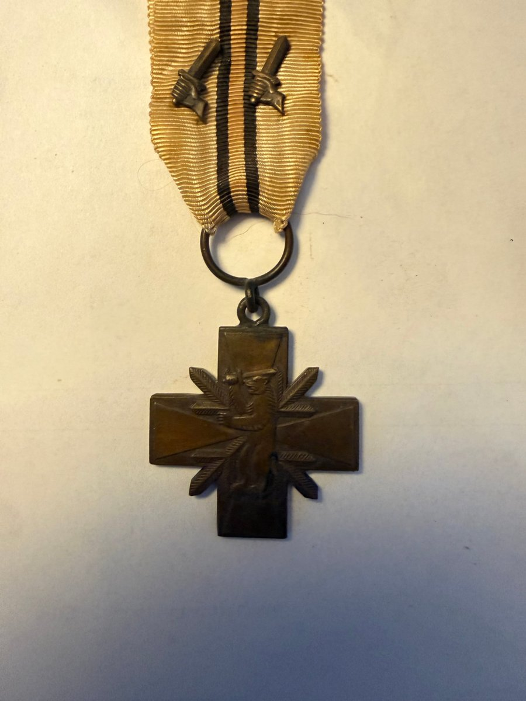
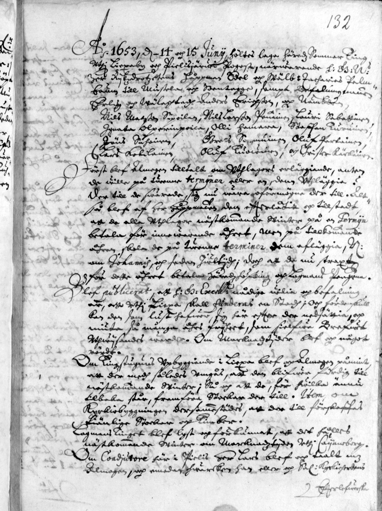
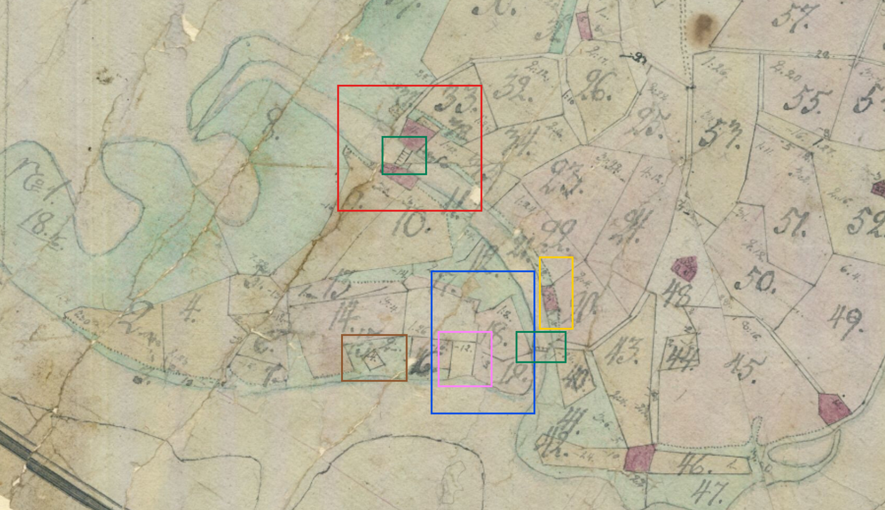
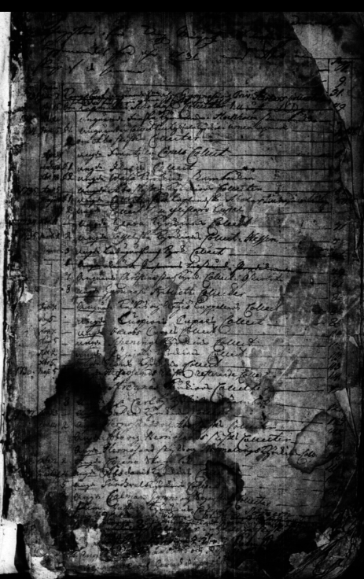
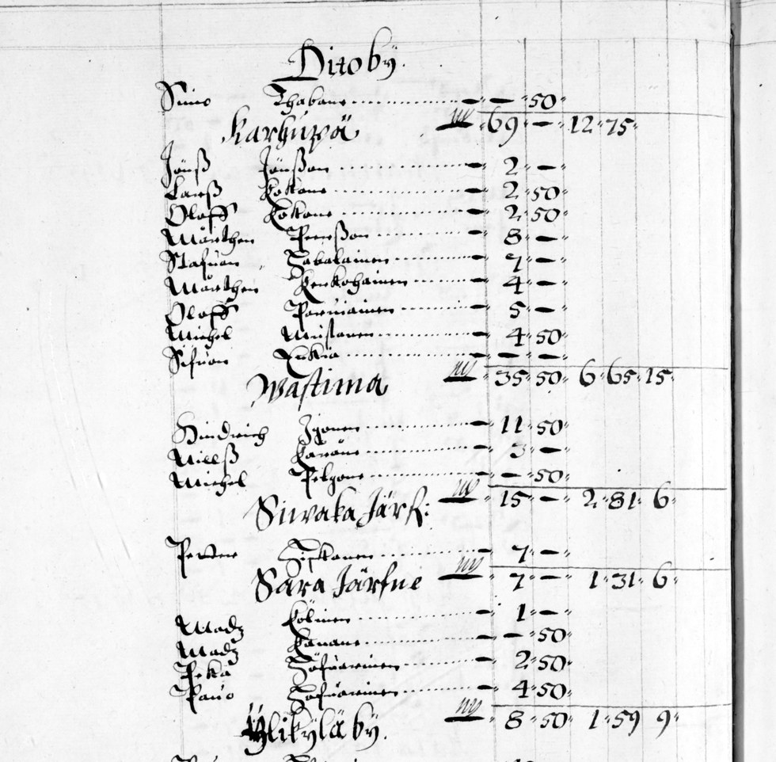
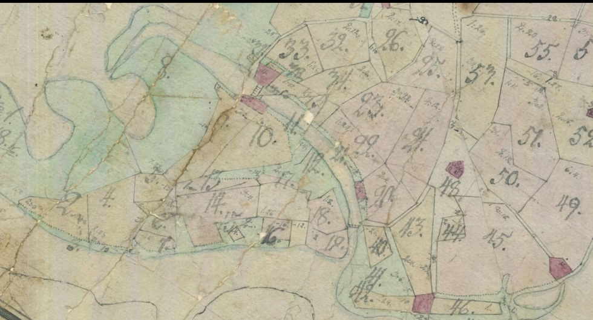
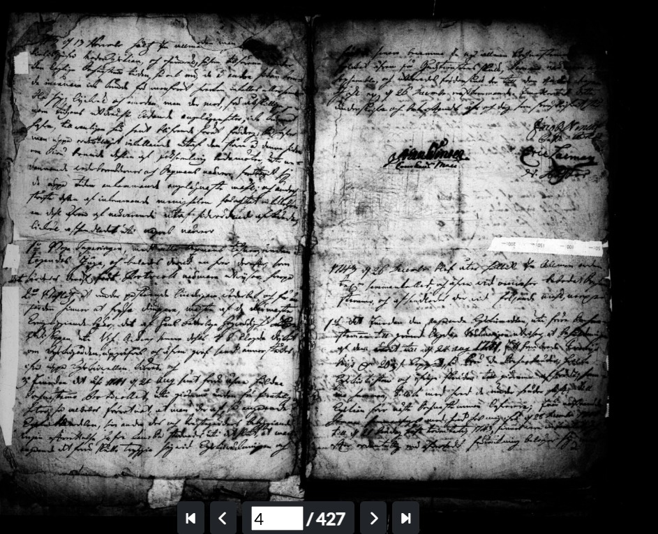
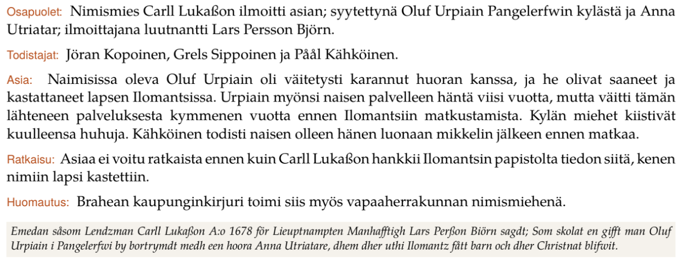
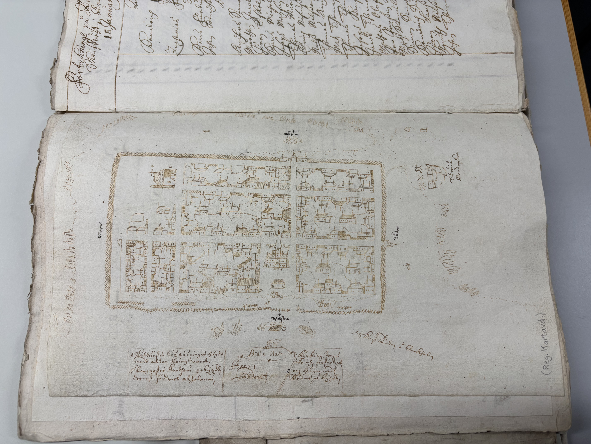

Missä Brahea seisoi
Aiemmissa katsauksissa esitin, että Lieksan vanha kirkko ja sen ympärille perustettu Brahean kaupunki olivat Varasjoen pohjoisrannalla eivätkä nykyisen kirkon kohdalla. Tämä raportti käy paikat läpi yksi kerrallaan: kirkko ja kellotapuli, käräjätalot, hovileiri, Johan Mustosen tontti, Iggolan tie, kreikanuskoisten kirkko, ensimmäinen pappila ja Isopappila, hovi ja Hovila. Jokaisesta kerron, mikä asiakirja paikasta puhuu, mitä se sanoo alkuperäisin sanoin, mistä sen löytää Astiasta ja miten lause rajaa paikan kartalla. Selvitys on vaatinut paljon lukemista: tuomiokirjat 1650-luvulta 1700-luvun lopulle, Käkisalmen läänin maakirjat 1638–1647, seurakunnan pitäjänkokousten ja piispantarkastusten pöytäkirjat, vuosien 1818–1819 verollepanokartta ja vuosien 1838–1840 isojakokartta. Päätelmä ei nojaa enää yhteen asiakirjaan vaan useaan, jotka osoittavat samaan paikkaan.
Laserkeilaus vahvistaa kuvan. Kirkonpaikan ympäriltä löytyi 46 rakennuksen pohjaksi sopivaa suorakaidetta kirkkomaan aidan sisä- ja ulkopuolelta, kaikki yli 95 metrin korkeudella eli maalla, joka on nykyäänkin rakennuskelpoista. Kirkosta lounaaseen Varasjoen rannalla on neljän pohjan ryhmä, jollaista ei ole yhdelläkään viidestä vertailualueesta. Se on samassa kohdassa, johon vuosien 1757, 1759 ja 1763 käräjäpöytäkirjat sijoittavat käräjätalon vanhan paikan ja Johan Mustosen päärakennuksen tontin heti kirkon sillan alapuolella. Raportti kertoo myös, mitä menetelmä ei pysty erottamaan: tulisijaksi sopivia kumpuja on pohjissa yhtä usein kuin vertailualueilla.
Elias Lönnrotin matkat 1828–1839
Elias Lönnrot oli Pielisjärven kirkossa sunnuntaina 10.8.1828, neljä päivää ennen kuin kirkko paloi. Hän tuli kirkolle veneellä 29.7., tapasi kirkkorannassa nimismies Steniuksen ja merkitsi muistiin vanhoja jäännöksiä muinaisesta kaupungista – Pogosta. Kirkonmenojen ajan hän oli Mustolassa, jonka isäntä luovutti neljä vuotta myöhemmin maan uudelle kirkolle. Päivällisen hän söi kappalainen Helleniuksen luona, ja sama Hellenius hoiti palon jälkeen kirjeenvaihdon uuden kirkon paikasta. Lönnrot lähti Lieksasta 13.8., palon aattona.
Vuonna 1837 Lönnrot kirjasi Lieksan kohdalle yhden sanan: Kirkonpolttaja. Samana vuonna Kymin kirkko tuhoutui tuhopoltossa, ja sen jälleenrakentamiseksi kerättiin kolehtia kaikissa Suomen seurakunnissa. Merkintä viittaa todennäköisimmin siihen eikä Pielisjärven vuoden 1828 paloon, jonka pöytäkirjat kertovat ukkosen aiheuttamaksi. Referaatti kokoaa kaikki yhdeksän matkaa (ajat, reitit, ihmiset ja tapahtumat), ja jokaisesta matkasta on oma karttansa.
Kirkko siirrettiin
Pielisjärven kirkko paloi ukkosen sytyttämänä 14. elokuuta 1828, eikä uutta kirkkoa rakennettu palaneen paikalle. Pitäjänkokous piti vanhaa paikkaa jo seuraavana keväänä högst otjenlig (mitä sopimattomimpana): se oli ahdas, rajoitettu ja paloaltis. Porvoon tuomiokapitulin pöytäkirjoista selviää, miten asia eteni. Kapituli vaati katselmuksia ja selvitystä maan omistuksesta ja kirkkoveneiden kulusta, asettui keväällä 1831 vastustamaan siirtoa, ja maaherra ratkaisi kirkkopaikan 14.6.1831. Uudelle kirkolle ja hautausmaalle tarvittiin maata naapurista: Mustolan isäntä luovutti katselmuksessa 6.8.1832 Lieksanjoen varrelta noin 262 × 50 metrin alueen, ja maa erotettiin isojaossa 1833. Korvaus maksettiin päivätöinä.
Uusi kirkko otettiin käyttöön syksyllä 1835 paikalla, jossa vuosien 1818–1819 verollepanokartassa on peltoa. Vanhan kirkon paikka Varasjoen pohjoisrannalla oli vielä 1837 erikseen katselmoitavissa. Kirkko ei siis ole seissyt samalla paikalla 1600-luvulta nykypäivään, eikä nykyistä kirkkoa voi käyttää Brahean kaupungin kiintopisteenä. Uuden kirkon piirsi C. L. Engel maaliskuussa 1830, ja kirkko vihittiin 23.8.1840. Maaherran päätöksen teksti on tilattu Kansallisarkistosta, ja artikkeli päivitetään, kun se saadaan.
Ketkä makaavat Varasjoen suulla
Huhtikuussa 1820 Pielisjärven pitäjänkokous päätti, että kirkon lattian alle haudatut nostetaan ja lasketaan kirkkomaahan: Liken bora från kyrkan upptagas och i kyrkojorden nedsättas (ruumiit on nostettava kirkosta ja laskettava kirkkomaahan). Haudattujen luettelossa on vuosilta 1741–1777 oma sarakkeensa hautapaikalle, ja siitä löytyi 219 nimeltä mainittua vainajaa, jotka haudattiin kirkon alle. He eivät olleet vain pappeja ja virkamiehiä. Suurin osa oli talonpoikia, heidän vaimojaan ja lapsiaan, ja kolme talollista sai kirkkohaudan ilmaiseksi. Kirkkokassan tileistä löytyi myös haudankaivaja, joka sai 1821 palkan mullan vetämisestä ja uuden rautalapion.
Kirkonpaikalla kasvaa nyt puolimetristä pajukkoa vuoden 1956 heinäpellon päällä. Laserkeilauksessa paikan keskellä on matala, noin 23 × 11 metrin painanne, jonka kohdalla pajukko kasvaa muuta korkeampana, ja pellon reunassa metrin korkuinen kumpu, joka voi olla kirkon lattiakivien raivauskasa. Lännestä pohjoiseen kulkee heikko kaari, joka sopii vuoden 1828 kuvaukseen hautausmaan puoliympyrästä. Se on välähtänyt esiin useammassa analyysissä, mutta varmistuu vasta maastotutkimuksin. Tilastollinen vertailu kumosi oletuksen, että kirkon alle olisi haudattu talvella muita useammin, mutta toi esiin Tapaninpäivän: 26. joulukuuta kirkkomaahan haudattiin joukolla syksyn ja alkutalven vainajia, enemmän kuin minään muuna kalenteripäivänä. Versio 2.1 korvaa 19.10.2026 julkaistun ensimmäisen version.
Neljä isäntää yhdessä talossa
Elokuussa 1912 Suomalaisen Wirallisen Lehden ilmoitussivulla oli kolmen rivin kuulutus: Nimeni, joka tähän asti on ollut Matti Hotanen, on tästä lähtien Matti Rantala. Seiskari, 19. 8. 1912. Kuulutuksen jättäjä oli isoisäni isä. Hän otti nimen saarella kolme vuotta ennen kuin muutti Uudenkirkon Vitikkalaan, ja omalla ilmoituksellaan, vaikka olin aiemmin tulkinnut veljen kuulutuksen sanan perheineen kattavan myös hänet.
Hotasen talo ei ollut yhden perheen koti. Samaan manttaaliin mahtui neljä isäntää, eikä taloa koskaan halottu, vaikka saaren kahdeksan muuta taloa halottiin. Perukirjoissa on kaljaasi, jaaloja ja nuotta-artelleja, velat laskettiin ruplissa, ja nuotta tilattiin venäläiseltä kauppiaalta. Koiviston käräjillä saaren jutut käsiteltiin omana ryhmänään, ja kun ne oli ratkaistu, Seiskarin lautamies Erik Hotanen sai luvan purjehtia kotiin. Lähteinä ovat Rannan tuomiokunnan perukirjat ja käräjäpöytäkirjat, Rannan kihlakunnan maakirja 1905, Karjala-tietokannan kirkonkirjat ja nimenmuutoskuulutukset.
Mieromiehen vaimo
Toukokuussa 1688 Vuonislahden talollinen Matz Kåtilainen lähti Tukholmaan viemään pitäjän valitusta kuninkaalle. Hän oli yksi pitäjän mieron miehistä, ja matkarahat lainattiin sortavalalaiselta porvarilta Tukholmassa. Kahdeksan kuukauden poissaolon aikana hänen vaimonsa Walborg tuli raskaaksi talon rengistä, renki iski miehen veljenpoikaa puukolla ja pakeni Venäjälle, ja vaimo pakeni perässä mutta palasi.
Vuonna 1691 Walborgin isä toi tyttärensä käräjille puhdistamaan tämän maineen. Käräjät tuomitsivat hänet kuolemaan, vaikka aviomies ei sitä halunnut. Pöytäkirjaan on kirjattu myös suomenkielisiä lauseita, jotka kirjuri ruotsinsi perään: Laskipa hän cuin koira Caudon.
Pormestarin jälkeläiset
Brahean ensimmäisen pormestarin suku ei kadonnut kaupungin mukana. Henrik Ahlholmin aviollisen pojan miehinen linja kulkee katkeamatta Lieksan Justolasta Ilomantsin Mekrijärvelle ja Luostarinvaaraan ja vuonna 1777 Kiihtelysvaaran Huhtilammelle. Vuonna 1882 Hammaslahdessa, Huhtilammella ja Mulossa eli kahdeksan Ahlholm-nimistä miestä, ja nämä kylät ovat nykyistä Joensuuta. Pormestarin aviottoman pojan, pitäjänluutnantti Erich Ahlholmin, oma linja katkeaa lähteissä hänen poikaansa, joka kastettiin Lieksassa 1689.
Kolme naista ei kuollut teloituspaikalla vaan lähti rajan yli. Aiemmassa sukuselvityksessä Konnunniemen Ahlholmien äiti ja tyttäret oli merkitty teloitetuiksi 3.4.1799. Ilomantsin rippikirjassa lukee afflyttad, muuttanut pois: Antti Ahlholm, Kaisa Könönen ja kaksi lasta lähtivät Venäjälle. Raportissa ovat myös Sonkajan kolmoismurha 1757, Huhtilammen karhu 1838, Hammaslahden huoruustuomio 1850 ja kaksi sukutaulua miehistä nimineen, kylineen, vuosineen ja titteleineen.
Kellarimestari
Vuonna 1829 Pielisjärven pitäjänkokous totesi yksimielisesti, että Carl Montin oli ensimmäinen, joka oli viljellyt seudulla perunaa suuremmassa määrin. Montin oli turkulainen kellarimestari, joka oli perinyt Lieksassa kuolleen setänsä, kappalainen Samuel Fredrik Montinin. Pielisjärvellä hän lainasi rahaa talonpojille, poltti perunasta viinaa, hoiti pitäjän viljamakasiinia ja vuokrasi avoimen kirkkoherranviran tulot yliopistolta.
Jouluna 1834 hän hakkasi renkinsä Simon Wartiaisen kuoliaaksi viina-astian takia. Vaasan hovioikeuden rikosasiain pöytäkirja kertoo tapahtumat todistajien sanoin: halko, kehto pörtissä ja varamaanmittari, joka palasi tupaan liian myöhään. Hovioikeus tuomitsi Montinin mestattavaksi, mutta vuonna 1837 hän oli Viaporin linnoituksessa.
Seitsemän ruutua metsää vuodessa
Vuoden 1690 tarkastusluettelo vahvistaa, että kaski oli Pielisjärven leipä: sadasta kylvetystä tynnyristä 87 meni kaskeen. Kun samat luvut muuttaa hehtaareiksi ja asettaa vuosien 1818–1819 verollepanokartan päälle laserkeilausmallin kanssa, Lieksan kylästä piirtyy tarkka kuva. Kylän 39 taloa polttivat vuodessa noin seitsemän 300 metrin neliötä metsää, ja koko kolmenkymmenen vuoden kaskikierto vei noin kymmenesosan kylän metsistä.
Metsää riitti, mutta viljaa ei. Katovuonna 1690 pitäjän viljaa jäi noin neljännes tynnyriä henkeä kohden, kahdeksasosa vuoden tarpeesta, ja nälkävuosina ruokaa haettiin metsästä pettuna. Artikkeli kertoo myös, miksi niittyä oli kaksitoista kertaa enemmän kuin peltoa, millaisia lehmiä Lieksan perukirjoissa oli (Kyrö, Lapuri, Mansikki, Kirja), miten isoviha vei pitäjästä tuhansia lehmiä ja miten pitäjänmakasiini syntyi katovuosien varalle.
Kappalainen, joka jäi
Kun venäläiset hyökkäsivät Pielisjärvelle 1656, kirkkoherra pakeni. Kappalainen jäi. Kun kirkkoherra palasi, hän vaati kappalaiselta tilitystä pakoaikana kannetuista hautausmaksuista. Hänen vaimonsa ja kaksi lastaan piileskelivät kaksi yötä metsässä, ja kirkko ja pappila poltettiin. Kolmekymmentä vuotta myöhemmin koko pitäjän rahvas todisti käräjillä, että kappalaisesta kirkkoherraksi noussut Lars Laurentii oli pitänyt miehuullisesti pintansa vihollista vastaan eikä ollut koskaan tarkka köyhien kymmenyksistä.
Pappila oli Brahean kaupungin ja sitten hovin naapuri, ja kirkkoherran perhe kulki pöytäkirjoissa mukana. Lukkariveli sakotettiin salavuoteudesta, ja kirkkoherra peri häneltä hautajaiskulut. Vävy oli pitäjän nimismies. Punatautivuosina 1685–1686 kirkkoherra hautasi yli 225 seurakuntalaista. Pappilassa puhuttiin vuokraajasta suomeksi: Arendatori sanotan huoran pojaxi. Leski menetti talonsa tulipalossa suurena nälkävuonna 1695.
Kun kuninkaan talonpojat vannoivat tsaarille
Vuonna 1710 osa Pohjois-Karjalan talonpojista vannoi uskollisuutta Venäjän tsaarille ja valtasi Nurmeksen hovin. Kaksi vuotta aiemmin Pielisen ja Ilomantsin miehet olivat tahallaan hyökänneet rajan yli houkutellakseen venäläiset tuhoamaan Lieksan hovin. Kuninkaan alamaiset kääntyivät vihollisen puoleen kesken sodan.
Artikkeli kokoaa tuomiokirjojen ja Kimmo Katajalan tutkimuksen pohjalta viisi Ruotsin kruunun päätöstä, jotka veivät siihen. Valloitetun maan talonpojat olivat kruunun vuokralaisia ilman edustusta valtiopäivillä. Brahean kaupungin maa otettiin heiltä kahdesti. Verot annettiin vuokraajalle, ja vuonna 1689 vuokrasopimuksista poistettiin katohelpotus juuri ennen suuria nälkävuosia. Valituksia ei kuultu, ja kapinan jälkeen sotilaat ampuivat talonpoikia ilman tuomiota. Kun Ruotsin kuningas ei kuullut, tsaarista tuli uusi hyvä kuningas. Pielisjärvi ei kuitenkaan kääntynyt yhtenä miehenä: toiset vannoivat tsaarille, toiset taistelivat venäläisiä vastaan.
Tuuli kääntyi kirkkoa kohti
Suurten nälkävuosien toisena talvena Kurkijoelta levisi Pielisjärvelle huhu, että kuningas oli antanut verot anteeksi. Kurkijoen talonpoika Lars Kilappa lupasi kylien edusmiehille, että kuninkaan herrat tulisivat ja verot sovittaisiin pysyviksi. Kun veronkantaja Simon Affleck, kansan muistama Simo Hurtta, tuli silti, Haapajärven miehet yrittivät ampua hänet jousella, johon oli kiinnitetty veitsi.
Joulun aikaan 1696 kymmenet talonpojat vaimoineen ryöstivät neljänä yönä Lieksan hovin ja Nurmeksen kartanon. Ensimmäisellä kerralla hovin väki puolustautui tuvassa, ja ryöstäjien kasaamat oljet jäivät sytyttämättä, kun tuuli kääntyi kirkkoa kohti. Kolmantena joulupäivänä hovi ryöstettiin tyhjäksi. Kun johtajalta kysyttiin syytä, hän vastasi: nälkä ja viha veronkantajaa kohtaan. Yhdeksän miestä ja Kilappa tuomittiin kuolemaan, neljä vankia kuoli ennen tuomiota, ja ratsumiehillä oli käsky olla säästämättä yhtäkään ryöstäjää.
Pormestarin avioton poika
Vuonna 1674 Brahean kaupunginkirjuri huusi Erich Ahlholmia kaikissa kemuissa huoranpenikaksi. Ahlholm oli pormestarin avioton poika, joka isän kuoltua joutui renkinä perimään palkkaansa pormestarin leskeltä. Muutamaa vuotta myöhemmin leski nai kirjurin, ja Ahlholm todisti raastuvassa uutta isäpuoltaan vastaan.
Rengistä tuli rusthollimestari, luutnantti ja talonpoika, jonka tuvat siirrettiin Lieksan skanssiin. Nälkätalvena 1696–1697 hän puolusti 14 hengen voimin Lieksan hovia satoja ryöstäjiä vastaan. Ryöstäjät kasasivat olkia hovin ympärille, mutta tuuli kääntyi kirkkoa kohti. Keväällä hän vangitsi naisen, joka oli nälänhädässä syönyt lapsensa. Venäläisten lähestyessä 1705 hän kielsi rovastia pakenemasta. Viimeisessä pöytäkirjassa vuonna 1729 vanha talonpoikaisluutnantti pyytää korvausta hovin palveluksessa kuluneista vaatteistaan, ja hänelle annetaan köyhyyden vuoksi kaksi kappaa ruista.
Kaunis käsiala, paha kieli
Elokuussa 1674 Brahean raastuvassa Erich Ahlholm valitti, että kaupunginkirjuri Carl Lukasson haukkui häntä kaikissa kemuissa roistoksi ja huoranpenikaksi. Lukasson ei pyytänyt anteeksi. Hän vastasi raadin edessä, että koska Ahlholm oli huoranpenikka, hänellä oli täysi oikeus kutsua tätä roistoksi. Raati sakotti häntä 12 markkaa. Pöytäkirjan kirjoitti kaupunginkirjuri itse, kauneimmalla käsialalla, mitä Brahean pöytäkirjoissa on.
Pian sen jälkeen Lukasson nai pormestarin lesken, ja mies, jota hän oli haukkunut, oli hänen vaimonsa edesmenneen miehen poika. Vuonna 1679 poikapuolet veivät hänet oikeuteen äitinsä omaisuudesta. Toukokuussa hän myönsi maanneensa naisen naimalupauksella ja vastasi kysymykseen avioliitosta Ingalunda, ei suinkaan. Kesällä luutnantti sulki hänet piikansa kanssa tupaan, ja todistajina istuivat poikapuoli ja Ahlholm. Sitten talo paloi ja virka vietiin. Tammikuussa 1680 hän valitti suomeksi syöneensä pettuleipää, ja koko rahvas asettui hänen puolelleen. Sen jälkeen hän katoaa asiakirjoista.
Nimismiehen talo
Tammikuussa 1680 Lieksan nimismies Karl Lukasson jätti käräjille suomeksi kirjoitetun valituksen. Hän oli 15 vuotta hiihtänyt talvisin pitäjää ympäri kreivin verorästien perässä ja syönyt pettuleipää. Nyt hänen talonsa oli palanut ja hänet oli erotettu virasta. Rahvas vastasi yhdestä suusta, ettei sillä ollut hänestä mitään moitittavaa. Kaupunginnotaarina Lukasson kirjoitti Brahean pöytäkirjat niin kauniilla käsialalla, että niitä ihmettelee vieläkin.
Talo sai nimen Moisio, ja siinä asui 250 vuoden aikana kirjava joukko. Kirkkoherran entinen renki toi Nyenistä tupakkaa, jota hän salakuljetti Savoon ja Venäjälle. Isonvihan aikana talossa asui paluumuuttaja, jonka poika oli ollut venäläisten asettama starosta, kunnes suomalaiset vapaarakuunat tappoivat hänet. Kruununnimismiehen leski asui hovileirillä, ja kaupunginviskaali menetti talon avioerossa vaimolleen sen jälkeen, kun hänet oli todettu syylliseksi Nurmeksen kievarissa. Vuonna 1923 valtio rakennutti samalle rannalle uuden nimismiehen talon.
Lotjalla Nyeniin
Syksyllä 1690 sortavalalaisen porvarin lotjalla lähti kuusi Lieksan miestä kauppatavaroineen Nyeniin, Ruotsin kauppakaupunkiin Nevan suulla nykyisen Pietarin paikalla. Lotjan omistaja Thomas Hulkoinen oli vielä pari vuotta aiemmin asunut Lieksassa.
Hulkoset olivat Brahean porvareita, jotka ostivat maata Lieksan kylästä. Kun kaupunki lakkautettiin ja hovi otti sen maat, Matz Hulkonen lähti valittamaan Tukholmaan asti ja palasi väkisin talolleen. Hänen poikansa riitelivät vuokraajan kanssa tupakasta ja todistuksesta, jolla pääsisi muuttamaan kaupunkiin. Lopulta he lähtivät. Vuonna 1690 Peter Matinpoika Hulkoinen muutti Sortavalaan porvariksi, koska hänen talonsa oli annettu hovileiriin, ja vuonna 1696 hänen veljensä Thomas oli Sortavalan raatimies, joka vei lotjalla kruunun viljaa Nyeniin.
Sapattiset jäivät, mutta porvarit lähtivät sinne, missä kaupunki vielä oli. Artikkeli perustuu Brahean, Kajaanin ja Sortavalan tuomiokirjoihin, Käkisalmen läänin käräjiin 1688–1702 ja kantatilaluetteloon.
Kaupunki meni, suku jäi
Kreikanuskoisella Sapattisten suvulla oli talo Lieksanjoen suulla jo ennen kaupunkia. Kun Brahea perustettiin 1653, talo jäi kaupungin maalle. Vuonna 1674 raati kutsui veljekset vastaamaan, ryhtyvätkö he porvareiksi. Vanhin veli vastasi kaikkien puolesta: jos kreivi lahjoittaa talon heille verovapaana, kaikki neljä veljestä asettuvat nöyrimmästi kaupungin tontille.
Kaupunki lakkautettiin, ja sen paikalle perustettiin hovi. Vuokraaja otti kaupungin maat 1684–1688, ja kymmenen talonpojan piti siirtyä korvaustaloihin. Viisi kuninkaalle valittaneista oli Sapattisia. Tita Sapattinen kieltäytyi lähtemästä, ja Jurgi Sapattisen tuvasta jäi pöytäkirjaan kaksi kertomusta: hovin miehet kaatoivat sen, tai hän pyysi itse apua sen purkamiseen. Jurgi vei tupansa entisen nimismiehen taloon Moisioon Lieksanjoen rantaan, jonne nimismiehen talo rakennettiin vielä 1923 Moisionkadun päähän.
Artikkeli seuraa sukua vuodesta 1631 vuoteen 1785 tuomiokirjojen, maakirjojen, henkikirjan, vuosien 1818–1819 verollepanokartan ja laserkeilauksen avulla. Laser ei näytä kynnetyllä kaupungin paikalla mitään, mutta kartat kertovat, missä käräjäpaikka ja Moisio olivat.
Pappila, joka ehti seistä vuoden
Kesällä 1655 talonpoika Mårten Liukkonen luovutti talonsa Brahean pappilaksi. Kirkkoherra Anders halusi sen, koska se oli lähempänä kirkkoa eikä sieltä tarvinnut keväisin päästä joen yli. Seuraavana kesänä venäläiset polttivat kirkon ja pappilan. Kappalainen Lars Laurentii kertoi Brahean käräjillä vuonna 1680 kyynelsilmin, kuinka hänen vaimonsa oli joutunut olemaan kahden pienen lapsen kanssa kaksi yötä metsässä.
Artikkeli kysyy, missä talo seisoi. Käräjäpöytäkirjat 1653–1655 kertovat, että talo oli vanhalla kolmen talon paikalla Sapattisten naapurina. Maakirjat 1655–1677 näyttävät, että Liukkoset jäivät paikalle: Mikitta Liukkonen isännöi taloa Sapattisten vieressä yli 20 vuotta palon jälkeen, ja vuonna 1677 halla vei hänen satonsa. Kun hovin vuokraaja otti kaupungin maat 1684–1688, Mikitta ei lähtenyt. Vuosien 1818–1819 verollepanokartta ja laserkeilaus rajaavat paikan kahteen alueeseen Varasjoen suulla, joen kummallekin rannalle.
Etelärannalla on kumpu, jota en osaa vielä selittää. Se on metrin korkea ja viisi metriä leveä, 26 metrin päässä tapulin tontista ja rekisteröidyn talonpohja-alueen vieressä. Laser ei kerro, onko se palaneen talon uunin raunio vai pellolta kerättyjen kivien kasa. Sen ratkaisevat isojaon jakokirja ja yksi käynti paikalla.
Kolme kirkkoa Varasjoen suulla
Lieksan vanhat kirkot eivät seisseet siellä, missä nykyinen kirkko seisoo. Kun yhdistin seurakunnan pöytäkirjat, vanhat kartat, vuoden 1956 ilmakuvan ja laserkeilauksen, ne osoittivat kaikki samaan paikkaan: Varasjoen suulle, rautatiesillan länsipuolelle. Siellä seisoi peräkkäin kolme kirkkoa, ja niiden ympärillä oli hautausmaa.
Kulmakivi on vuosien 1818–1819 verollepanokartta. Kymmenen vuotta ennen kirkon paloa nykyisen kirkon kohdalla oli peltoa. Asutus oli Varasjoen varressa, ja sillan molemmin puolin oli tontti: pohjoisrannalla kirkon ja hautausmaan, etelärannalla kellotapulin. Seurakunnan pöytäkirjat kuvaavat paikan samalla tavalla 160 vuoden ajan: kirkko seisoi pienellä ja matalalla kohoumalla, jota vanhoissa asiakirjoissa kutsutaan sanalla holme, sen pohjoispuolelle kaivettiin ojaa, ja hautausmaa oli puoliympyrä, jonka sisällä kirkko oli.
Artikkelissa esitän, missä kolme kirkkoa olivat. Ensimmäinen luterilainen kirkko oli Varasjoen eteläpuolella niemellä, noin 150 kyynärän päässä myöhemmistä. Pietari Brahen vuoden 1667 kirkko ja sen viereen 1765 aloitettu ristikirkko, joka paloi 1828, olivat pohjoisrannan kohoumalla noin 50 metrin päässä toisistaan. Kirkon alle haudatut nostettiin pöytäkirjan mukaan 1820, ja kirkonpaikkojen välissä on kaivanto, joka sopii siihen. Laserkeilauksessa niiden ympäriltä erottuvat kaivanto, kuoppa-alueet ja puolikaaren muotoinen kehä. Kellotapulin paikka jäi rautatiepenkereen alle, mutta penkereen vierestä on löytynyt tiiltä ja hiiltä sisältävä kulttuurikerros.
Kerron myös, mitä laser ei näyttänyt. Kirkkojen omat pohjat ovat vain muutamien kymmenien senttien korkuisia, eikä niitä voi erottaa metsämaan taustasta tällä aineistolla. Automaattinen haku kellarikuopille ja uuninpohjille tuotti saman verran ehdokkaita kuin pelkkä sattuma, joten en esitä niitä löytöinä. Analyysit on tehty Maanmittauslaitoksen tarkimmasta laserkeilausaineistosta, jota lisenssi ei salli jakaa. Siksi artikkelin kuvat ja verkossa oleva 3D-malli on tehty karkeammasta, avoimesta aineistosta. Paikka ratkeaa maatutkalla, ja siitä päättävät museoviranomaiset ja seurakunta.
Brahea laserkeilattuna: 3D-malli ja kohdesivut
Latasin Maanmittauslaitokselta Lieksan keskustan tarkimman laserkeilausaineiston ja rakensin siitä 3D-mallin Brahean alueesta. Kesällä 2023 lennetyssä keilauksessa on viisi mittapistettä neliömetrillä. Kun puut, rakennukset ja muu maanpinnan päällä oleva suodatetaan pois, jäljelle jää paljas maanpinta noin puolen metrin tarkkuudella. Siitä näkyvät painanteet, kohoumat ja reunat, jotka eivät erotu kävellessä eivätkä ilmakuvassa.
Malliin on merkitty kaikki, mitä asiakirjat ja kartat kertovat. Keltaiset liput ovat muistiossa paikannetut kohteet: vanha kirkko ja kellotapuli Varasjoen suulla, käräjäpaikka, ensimmäinen hovi, skanssi, Hovila ja pappila. Katkoviivat ovat vuosien 1818–1819 verollepanokartan tonttimaat ja keltainen kaista oletettu pääkatu. Neulat ovat kohtia, joissa automaattinen haku löysi maanpinnasta poikkeaman ja jotka kävin sen jälkeen itse läpi. Haussa on suodatettu pois kaikki, mitä Maanmittauslaitoksen maastotietokanta tuntee: nykyiset rakennukset, tiet, rautatie, ojat ja vesistöt suojavyöhykkeineen. Neulat osuvat siis kohtiin, joissa maanpinnassa näyttää olevan rakenne, mutta kartan mukaan siinä ei ole mitään.
Neulat ovat ehdokkaita, eivät löytöjä. Haku vertaili maanpintaa kuudella menetelmällä, joita käytetään laserkeilausaineiston arkeologisessa tulkinnassa. Se hyväksyi vain kohdat, jotka vähintään kaksi menetelmää näki ja jotka säilyivät, kun hakurajoja muutettiin ylös ja alas. Raakaehdokkaita kertyi noin 200 000. Vanhan Brahean ja sen lähialueen 20 parasta kävin läpi kuvalevyiltä, ja kymmenen niistä osoittautui kiviksi, kannoiksi, penkereiden reunoiksi tai metsän säännöllisiksi kuoppakentiksi.
Jäljelle jäi neljä kiinnostavaa ja kuusi epävarmaa kohdetta. Kiinnostavat ovat pitkänomainen painanne, kaksi selvästi rajattua kumpua ja suora penger, joka päättyy pyöreään kumpuun. Mallissa ne on merkitty neulan ympärille piirretyllä renkaalla, kiinnostavat keltaisella ja epävarmat oranssilla. Muut neulat ovat automaattisen haun ehdokkaita koko 18 neliökilometrin alueelta: isoja neuloja on noin 80 ja pienempiä lähes 300. Niitä en ole käynyt läpi yksitellen. Vanhan kirkon kohdalta ei erotu hautapainanteita. Nykyisen Lieksan rakennukset ja tiet asettuvat suuntiin 34° ja 124° pohjoisesta, kun Brahean pääkatu kulki 64° suuntaan, ja kahden puistoalueen reunat noudattavat Brahean suuntia.
Mallia voi tutkia itse. Kuvat ovat tarkimmasta viiden pisteen aineistosta. Verkossa oleva malli on tehty samasta keilauksesta avoimena julkaistusta harvennetusta aineistosta, koska tarkkaa aineistoa ei lisenssiehtojen mukaan saa jakaa. Myös kohdesivujen kuvat ovat kahden metrin tarkkuudella. Tarkemmat, puolen metrin kuvat kaikista kohteista ovat minulla omassa käytössä, ja niissä erottuvat erityisesti pienet kohteet, kuten uuninpohjat. Malli aukeaa suoraan selaimessa (Edge, Chrome tai Firefox), eikä mitään tarvitse asentaa. Mallia pyöritetään hiiren vasemmalla painikkeella, siirretään oikealla ja zoomataan rullalla. Vasemman reunan valikosta voi vaihtaa näkymää (rinnevalo, paikallinen korkeusmalli väriasteikkona, kaltevuus) ja kytkeä kerroksia päälle ja pois. Neulaa klikkaamalla aukeaa kohteen oma sivu, jossa on kuva, koordinaatit ja linkki Kansalaisen karttapaikkaan. Sivulta voi lähettää minulle sähköpostia, jos tietää, mitä kohdassa on tai on ollut. Nykyiset rakennukset näkyvät mallissa valkoisina, ja ne saa pois valikosta. Maastoa klikkaamalla saa kohdan koordinaatit leikepöydälle samassa muodossa kuin Kansalaisen karttapaikassa, ja tallennetut pisteet saa GPX-tiedostona omaan karttaohjelmaan. Malli kattaa noin 18 neliökilometriä Brahean alueelta Lieksanjoen vartta pohjoiseen. Malli on noin 30 Mt, joten sen avautuminen kestää hetken.
Avaa 3D-malli Kohdeluettelo Lue muistio (PDF)
Skanssi kartalla ja maastossa. Vuosien 1818–1819 verollepanokartalla on rannassa punainen viisikulmainen merkintä, jonka arvelen skanssin paikaksi. Laserkeilausmallissa samassa kohdassa maastosta erottuu viisikulmainen muoto, jonka reunat korostin keltaisella. Yhtäläisyyden näkeminen vaatii hiukan mielikuvitusta, eikä se vielä todista mitään, mutta muoto ja paikka rannassa vastaavat toisiaan.
Heimoveli, joka halusi oman kielen
Isoisäni Pekka Jukola taisteli kahdesti Karjalan vapauden puolesta Suomen tukemissa sodissa. Hän syntyi 1898 Hokanmäen kylässä Aunuksen Mäntyselässä, palveli tsaarin armeijassa ja tuli Suomeen syksyllä 1918, vuoden tai kaksi ennen veljiään Juhoa ja Paavoa. Hän oli mukana Aunuksen retkellä 1919 ja Itä-Karjalan kansannousussa 1921–22. Kotiin jäivät vanhemmat ja sisar, joista ei tiedetä varmasti mitään vuoden 1937 jälkeen.
Suomessa pakolainen ei saanut omistaa maata, joten talollisen pojasta tuli sahamies. Pekka rakensi Wiborg Woodin sahan Suojärvelle, kävi Viipurin sahateollisuuskoulun ja johti sahoja Kivennavalla, Pielisjärvellä ja Lapinjärvellä, kunnes perusti veljiensä kanssa Veljekset Jukola Oy:n. Vuonna 1926 veljekset ilmoittivat lehdessä, että heidän nimensä Ivanoff on tästä lähtien Jukola.
Samalla hän joutui keskelle kiistaa siitä, mitä karjalaisuus on. Hän oli perustamassa Suojärven Karjalan Kansalaisseuraa, joka vaati karjalaisille omaa kirjakieltä, julkaisi 1935 Paavon toimittaman Rahvahan Sanan ja kustansi E. V. Ahtian Karjalan kieliopin. Pekka johti puhetta kokouksessa, jossa seura otti käyttöön oman lippunsa ja kantelevaakunansa. Heimoliike piti hanketta hajoitusyrityksenä. Silti heimoliike tunnusti Pekan heimosoturiksi: hänen heimosotaristinsa nauhassa on kaksi miekkaa, yksi kummastakin sotaretkestä. Suomen kansalaiseksi hän pääsi vasta 1938, 40-vuotiaana, ja asiakirja on yhä suvun hallussa.

Meidän talon hirsien tarina
Tuomarniemen päätuvan seinissä on hirsiä, jotka ovat kuulleet enemmän kuin yksikään toinen talo Viinijärven rannalla. Suvun muistin mukaan ne ovat Liperin käräjätuvasta. Isoisovanhemmat purkivat tuvan ja ajoivat hirret hevosilla Sukkulajoen varteen, ja vuosina 2009–2012 ne siirrettiin vielä kerran, tänne Tuomarniemeen. Selvitin Kansallisarkiston asiakirjoista, mikä talo Liperin käräjätupa oli.
Käräjätalo oli kirkonkylässä. Pitäjä rakensi sen vuosina 1797–1799 kruununtilalle N:o 5, jonka myöhempi nimi on Penttilä. Talo oli välillä tuomarien hallussa, kunnes pitäjä lunasti sen tammikuussa 1860 nimellä Käräjä-kartano. Käräjät pidettiin talossa vuoteen 1881, ja sen salissa valittiin myös Liperin valitsijamiehet vuosien 1863 ja 1867 valtiopäiville. Käräjien jälkeen talossa toimi kirkonkylän kansakoulu. Tilan paikalla ovat nykyisin Liperin koulut ja Penttiläntie.
Hirsien ikä voidaan mitata. Talon päärakennus oli pystyssä jo 1846, joten kehikko on todennäköisesti vuosien 1797–1799 rakennus. Dendrokronologinen ajoitus ratkaisee asian: kun hirrestä otetaan kairanäyte kohdasta, jossa pintapuu tai kuoren raja on tallella, saadaan kaatovuosi usein vuoden tarkkuudella.
Muistiossa on talon vaiheet 1781–1905 Liperin pitäjänkokousten pöytäkirjoista ja tuomiokirjoista, kartta, aikajana, aikajärjestyksessä etenevä kertomus käräjätalon vuosista 1782–1908: 42 oikeusasiaa tuomioineen sekä pitäjän ja kirkonkylän tapahtumat kirkon palosta nälkävuosiin ja valtiopäivävaaleihin.
Brahea oli Varasjoen pohjoispuolella
Brahean kaupunkia on etsitty väärältä puolelta Varasjokea. Pielisjärven kirkko ei ole aina seissyt nykyisellä paikallaan, vaan se siirrettiin vuoden 1828 palon jälkeen. Kun tämä otetaan huomioon, sama asiakirja-aineisto, jonka perusteella kaupunkia on etsitty Kaupunginniemeltä, osoittaa Varasjoen pohjoisrannalle, nykyisen rautatiesillan ja käräjäpaikan väliin.
Kaksi karttaa kertoo sen. Vuosien 1818–1819 verollepanokartalla nykyisen kirkon kohdalla on peltoa, palsta 18. Kirkko ja hautausmaa ovat Varasjoen pohjoisrannalla matalalla saarekkeella, ja kellotapuli on etelärannalla sillan takana. Vuosien 1838–1840 isojakokartalla kirkko on jo etelärannalla, ja pohjoisrannan kirkkotontti on peltoa. Seurakunnan pöytäkirjat kertovat saman: vuonna 1829 pitäjä päätti, ettei kirkkoa rakenneta palaneen kirkon ahtaalle paikalle uti en By (kylässä), ja vuonna 1832 uusi kirkko päätettiin rakentaa vanhan kirkkomaan tapulin puoleiselle osalle.
Kirkon paikasta seuraa kaupungin paikka. Vuonna 1653 kirkko ja käräjätupa käskettiin rakentaa samaan paikkaan. Vuonna 1688 hovileiri koottiin kaupungin paikalle, ja vuonna 1689 hovin rakennuksiin kuului the gamla stor Tingstugu (vanha suuri käräjätupa). Muistiossa esitän, että kaupungin pääkatu kulki kirkolta suoraan noin 450 metriä koilliseen käräjäpaikalle, että kaupunki oli 2–3 hehtaarin kaista tämän kadun varrella kuten Pietari Brahen muut saman ajan kaupungit, että ensimmäinen hovi oli Varasjoen pohjoisrannalla kirkon itäpuolella ja että skanssi oli samassa suunnassa Lieksanjoen törmällä.
Aiempi tutkimus antoi tälle pohjan. Mauri Mönkkösen Atlas Lieksan historiaan -sarja kokosi hajallaan olleet tiedot ensimmäistä kertaa yhdeksi kuvaksi kaupungista, ja hän totesi itse, että kaupungin tarkka paikka ja asemakaava ovat jääneet arvailun varaan. Moni hänen havainnoistaan pitää: hovi oli kirkon itäpuolella jokien välissä, ja käräjärakennus ja kirkkovalli olivat hovin vieressä. Ero on yhdessä oletuksessa, siinä että kirkko on aina seissyt samassa paikassa. Kun kirkko siirretään asiakirjojen osoittamalle paikalle, samat suhteet asettuvat Varasjoen pohjoispuolelle. Se selittää myös, miksi Pohjois-Karjalan museon vuoden 2026 koekuopat Kaupunginniemellä eivät löytäneet kaupunkia.
Hyvä uutinen on, että paikka on tutkittavissa. Useimmat muistion kohteet ovat nykyisin rakentamatonta, tasaista nurmi- ja heinämaata, ja moni niistä on vanhaa peltoa. Ne sopivat maatutkaukselle, jolla perustukset, hautausmaan rajat ja katulinjat voi paikantaa kaivamatta. Muistion lopussa on kohteet tärkeysjärjestyksessä: vanha kirkko ja hautausmaa, kellotapuli ja makasiini, ensimmäinen hovi, pääkadun alku kirkolta ja skanssin ranta.
Muistiossa on aikajana, kaikki vuosien 1818–1819 kartan tonttimaat numeroituna ja tulkittuna, kirkon tieltä siirretyt talot nimeltä, pappilan kaksi vaihetta sekä lähteet Astia-linkkeineen. Jokaisella väitteellä on lähdetaso: alkuperäisestä luettu, koneluenta, kirjallisuus tai oma päätelmä.
Brahea ja sen kirkko 1653–1680
Kävin läpi Pielisjärven käräjät Kajaanin vapaaherrakunnan tuomiokirjoista vuosilta 1653–1659 ja 1676–1680 sekä Lieksan Brahean oman raastuvanoikeuden pöytäkirjat vuosilta 1668–1679. Ne kertovat kaupungin ja sen kirkon alkuvaiheet tarkemmin kuin tähän asti käytetty kirjallisuus, ja useimmat kohdat ovat nyt luettavissa suoraan alkuperäisestä sivusta.
Kaupunki perustettiin pellolle. Tammikuussa 1653 käräjillä Nurmeksessa puhuttiin kaupungista, joka kreivin käskystä perustetaan Lieksaan. Kesäkuussa 1653 käräjät pidettiin jo Lieksan kylässä, ja niillä kuulutettiin kaupungin perustaminen ja määrättiin rakennettavaksi käräjätupa ja kirkko samaan paikkaan. Tammikuussa 1656 talonpoika Oluf Ni[…] kertoi, että hänen ostamansa talon pellot oli määrätty kaupungin paikaksi, ja hän sai siirtää talonsa jokea ylös Lieksankosken suulle.
Kirkko paloi ennen kuin se ehti valmistua. Käräjätupa valmistui 1654, mutta kirkon hirret olivat yhä tuomatta tammikuussa 1656. Samana kesänä Venäjän sodassa vihollinen poltti kyrckian, Prästegården och några andra bondegårdar (kirkon, pappilan ja muutamia talonpoikaistaloja), kuten kirkkoherra Lars Laurentii kyynelsilmin kertoi käräjillä 1680. Kreivi rakennutti 1667 uuden kirkon Kaupunginsaarelle, ja vuonna 1679 se oli Brahean emäkirkko, jossa toimi kaupungin oma kappalainen. Kirjallisuuden vuosi 1657 kirkon valmistumiselle osuu samassa niteessä Raaheen eli Brahestadiin, ei Lieksaan.
Kirkon paikasta asiakirjat kertovat kolme asiaa. Kirkko ja käräjätupa rakennettiin samaan paikkaan. Kirkko tuli Lieksanjoen eri puolelle kuin venäläisen papin entinen pappila, josta keväisin oli vaikea päästä joen yli. Ja kreikanuskoisilla oli Lieksassa oma pieni kirkko ja sen vieressä hautausmaa jo ennen kaupunkia, ja heille sallittiin uuden kirkon rakentaminen samalle paikalle.
Kaupungin elämää. Muistiossa on oma osansa kertomuksille: kirkonkellon maksu jaettiin uskon mukaan, porvareita piti vuodesta toiseen käskeä muuttamaan kaupunkiin, majatalossa paloviinaan osallistuva laski lakkinsa lattialle eikä saanut nostaa sitä ennen kuin oli maksanut, kolmestakymmenestä kirveestä kuusitoista sopi murtojälkeen, pormestari sai kuulla, että lohi on arka kala, ja nimismies kirjoitti oikeudelle suomeksi hiihtäneensä viisitoista talvea pitäjää ympäri pettuleivällä ja vedellä. Markkinat pidettiin uudenvuodenpäivänä, kesäkuussa ja kynttilänpäivänä. Lopussa ovat henkilö- ja paikkaluettelo sekä lähteet Astia-linkkeineen.
Samalla korjasin aiemmat Brahea- ja kirkkoraportit: Palaneen kirkon paikka on nyt versio 1.1, ja raporttien Kaupunki joka kynnettiin pelloksi, Kirkko joka muutti paikkaa, Kadonneen kirkon jäljillä ja Kylä kaupungin alla alkuun on lisätty korjaussivu.

Palaneen kirkon paikka
Pielisjärven emäkirkko ja kellotapuli paloivat ukkosen sytyttämässä tulipalossa 14. elokuuta 1828. Tämä muistio kokoaa, mitä pitäjänkokousten pöytäkirjat 1743–1839, piispan- ja rovastintarkastukset 1737–1846 sekä Juuan kappelin asiakirjat kertovat kirkon paikasta, koosta ja rakentamisesta. Johtopäätökseni on, että palanut kirkko seisoi Varasjoen pohjoisrannalla matalalla saarekkeella ja sen kellotapuli etelärannalla, ja niiden välissä oli silta. Uusi kirkko rakennettiin 1832–1837 etelärannalle vanhan kirkkomaan osalle, jota laajennettiin naapuritalon maalla.
Asiakirjat kuvaavat paikan samalla tavalla sadan vuoden ajan. Vuoden 1667 kirkko rakennettiin saarelle nimeltä Kaupungin Saari. Piispantarkastus 1765 toteaa kirkon gamla och nog trånga (vanhaksi ja varsin ahtaaksi) ja kellotapulin juuri rakennetuksi. Vuonna 1797 kirkkoa uhkasi tulipalo sen vieressä olevista käräjätaloista, ja hautausmaata ympäröivät haat ja pellot. Vuonna 1810 kirkko seisoi uppå en liten ganska låg Holme (pienellä ja hyvin matalalla saarella), ja vuonna 1813 kirkon ja tapulin välistä siltaa ehdotettiin täytettäväksi. Vuoden 1829 siirtopäätös perustelee siirron samoilla sanoilla: kirkko oli kylässä ahtaalla ja paloalttiilla paikalla.
Kirkon paikasta seuraa kaupungin paikka. Hovi ja käräjätalo seisoivat kirkonmaalla, ja palanut kirkko oli rakennettu kylään. Brahean kaupunkia kannattaa siksi etsiä vanhan kirkonpaikan pohjois- ja koillispuolelta eikä nykyiseltä Kaupunginniemeltä, joka oli vuosina 1818–1819 rantaniittyä ja peltoa. Pormestari Alholmin piirros vuodelta 1664 sijoittaa kaupungin paikan Lieksanjoen pohjoispuolelle kylästä sisämaahan.
Muistio korjaa kolme kohtaa aiemmasta raportista. Vuoden 1830 katselmuksen etäisyydet ovat kyynäriä eivätkä syliä, eli pohjoisen virkatalot olivat noin 240–300 metrin päässä. Maankohoaminen ei ole Pielisen rannalla nostanut maata metriä 1600-luvulta, koska järven pinta nousee lasku-uoman mukana; suhteellinen muutos on kymmeniä senttejä. Ja aiempi kokoarvio koski ristikirkon yhtä siipeä, ei koko kirkkoa.
Toinen puoli muistiosta on muita havaintoja: pitäjänmakasiini ja sen riidat, ehtoollisviini, rakentajat Selanderista Tolpoon, Juukan ja Nurmeksen osuudet kirkonrakennukseen, väliaikainen kirkko vanhassa käräjätalossa, nälkävuodet ja Affleckit Lieksan kirkonkylässä. Lopussa ovat henkilöluettelo, paikkaluettelo ja luettelo siitä, mitä ei vielä löytynyt.


Matkan varrelta
Lähdin etsimään Brahean kaupungin paikkaa ja sitä, missä Pielisjärven vanha kirkko seisoi. Matkan varrella kävin läpi arkistoaineistoa, joka ei vastannut omaan kysymykseeni mutta joka on selvästi arvokasta jollekin toiselle. Tuntui väärältä jättää se kirjaamatta: arkistoaineiston läpikäynti on hidasta, ja kun joku on jo lukenut niteen, seuraavan ei tarvitse aloittaa alusta.
Kooste sisältää kymmenen arkistoyksikköä. Inkerin ja Käkisalmen läänin maakirja 1651, joka on laadittu kaksi vuotta ennen kaupungin perustamista ja jossa on noin 120 talollista nimeltä ja kylittäin. Pielisjärven pitäjänkokousten pöytäkirjat neljänä jaksona vuosilta 1743–1838. Kirkon rakennusrahaston tilit, jotka ovat käytännössä koko pitäjän talollisluettelo siltä ajalta, jolta rippikirjoja on vain osittain. Vaivais- ja kirkkokassan tilikirja, kiinteistöasiakirjat isojaon jakokirjoineen, piispan- ja rovastintarkastusten pöytäkirjat sekä valtion viranomaisten kirjeet.
Jokaisesta jaksosta on kommenttiosa, jossa kerrotaan mitä asiakirjat sanovat ja mitä niistä voi päätellä, sekä henkilö- ja paikkaluettelot rooleineen ja kuvanumeroineen. Merkinnät kertovat, mikä on luettu varmasti, mikä on epävarma luenta ja mikä on oma päätelmä.
Poimintoja. Vuoden 1801 pitäjänkokouksessa rovasti kuvaa nälänhätää, joka koski Pielisjärveä ja naapuripitäjiä; sata tynnyriä viljaa ei riittänyt eikä kruunulta ollut saatu apua. Vuoden 1802 kokouksessa pöytäkirja tulkittiin suomeksi, koska väki ei ymmärtänyt ruotsia, ja vuoden 1810 tienoilta on kokonaan suomenkielinen kuulutus teiden kunnosta. Vuoden 1815 piispantarkastus moittii arkiston tilaa niin ankarasti, että siitä selviää, miksi pitäjänkokousten nide ei ole aikajärjestyksessä: se koottiin jälkikäteen irtolehdistä.
En ole historiantutkija enkä väitä olevani. Luen asiakirjoja itse, ja käsiala pettää minua säännöllisesti. Siksi jokaisessa kohdassa on merkintä siitä, kuinka varma luenta on. Jos löydät virheen, kerro siitä — korjaan sen, ja seuraava lukija saa paremman version.

Kadonneen kirkon jäljillä
Pielisjärven kirkko ja kellotapuli paloivat salamaniskusta 14. elokuuta 1828. Uusi kirkko nousi 1838 ja vihittiin 1840, mutta se ei noussut vanhalle paikalle. Kirjallisuudessa toistetaan, että kaikki kirkot vuodesta 1667 alkaen olisivat seisseet samalla paikalla. Tämä raportti osoittaa, ettei niin ole, ja esittää missä vanha kirkko seisoi.
Ratkaiseva asiakirja on katselmuspöytäkirja 23. elokuuta 1830. Se pidettiin kirkkoherran virkatalossa varakruununvouti Kjerppen johdolla, ja siinä kuvataan palanut kirkonpaikka: se oli aivan Lieksanjoen vieressä, noin virstan päässä joen laskukohdasta Pieliseen, ja se oli veden ympäröimä saari. Eteläpuolella joen virran vieressä oli kirkkoherran virkatalo, pohjoispuolella kaksi asuinpaikkaa 400–500 syllän päässä, ja vanhan kirkkomaan vieressä kreikkalaisuskoisten rukoushuone. Pöytäkirja lähetettiin tuomiokapitulille Porvooseen, eikä sen ratkaisua ole löytynyt seurakunnan arkistosta.
Mitat osoittavat yhteen kohtaan. Etäisyys joen suusta ei erottele, koska nykyinenkin kirkko on suunnilleen kilometrin päässä. Erotteleva mitta on etäisyys pohjoisen taloihin: nykyisestä kirkosta on Hovilaan 289 metriä ja Rantalaan 601, kun katselmus edellyttää 710–890 metriä. Varasjoen suulta mitattuna luvut osuvat. Sama kohta on veden kiertämä kolmelta puolelta, ja koska maa on kohonnut 1600-luvulta noin metrin ja Pielisen pinta vaihteli ennen patoamista saman verran, kuvaus saaresta sopii 1700-luvun maastoon vaikkei nykyiseen.
Maasta on löytynyt kulttuurikerros juuri siitä. Museoviraston muinaisjäännösrekisterissä on kohde Kirkkosaari 1, jossa Varasjoen eteläpuolelle tehdyn koekuopan pohjalta havaittiin tiilestä ja hiilestä koostuva kerros. Tiili on puhuva löytö: talonpojan tuvan tulisija oli ladottua kiveä, ja tiiltä käytettiin muurattuihin uuneihin ja piippuihin säätyläisten taloissa, hovissa, pappilassa ja julkisissa rakennuksissa. Vuoden 1689 tuomiokirja kertoo, että Salomon Enberg muurasi Lieksan skanssin sisällä piipun ja uunin.
Johtopäätös. Brahean ajan kirkko ja sen tilalle 1764–1774 rakennettu kirkko seisoivat Varasjoen suun ja Lieksanjoen välisellä vyöhykkeellä, samassa kohdassa jonka muinaisjäännösrekisteri tuntee nimellä Kirkkosaari 1. Nykyinen kirkon paikka on peräisin vuoden 1829 siirtopäätöksestä. Muinaisjäännösrekisterin havainnot ovat Varasjoen eteläpuolelta; pohjoispuolelta ei ole rekisteröityjä havaintoja, vaikka vuosien 1818–1819 kartta osoittaa siellä tonttimaan rakennuksineen. Varasjoen alajuoksu on täytetty ja osa alueesta on rautatien penkereen alla, mutta Kirkkosaari 1 on yhä avointa puistoaluetta.
Raportissa on neljä varausta omana lukunaan, läpikäyty aineisto niteittäin kuvaväleineen, henkilöluettelo rooleineen, paikka- ja tilaluettelo numeroineen sekä luettelo siitä, mitä ei löytynyt ja mistä sitä kannattaa etsiä.
Päivitys 3.10.2026. Raportin luku 9 on vanhentunut, ja sen korvaa muistio Palaneen kirkon paikka. Samalla korjautuu kaksi tämän tiivistelmän lukua: katselmuksen etäisyydet ovat 400–500 kyynärää eli noin 240–300 metriä, ei syltä, eikä maankohoaminen ole Pielisen rannalla nostanut maata metriä 1600-luvulta.

Kirkko joka muutti paikkaa
Pohjois-Karjalan museo kaivoi syyskuussa 2026 koekuoppia Lieksan keskustassa ja etsi Brahean kaupunkia, joka perustettiin 1653 ja lakkautettiin 1681. Mitään ei löytynyt, ja tulokseksi jäi päätelmä: koska kaupunkia ei ollut muualla, se oli todennäköisesti Kirkkopuiston kohdalla. Päättely nojaa yhteen oletukseen, jota kukaan ei ollut tarkistanut, eli siihen että kirkko on seissyt samalla paikalla 1600-luvulta asti.
Päättelyketju on tämä.
- Vuosien 1818–1819 verollepanokartalla siinä, missä kirkko nyt seisoo, on numeroituja peltopalstoja ja niittyä, ei yhtään tonttimaata. Kirkko ei ollut siellä kymmenen vuotta ennen paloa.
- Pitäjänkokous päätti 22.3.1829, että palaneen kirkon paikka oli uudelle kirkolle mitä sopimattomin, koska se oli ahdas, rajoitettu ja paloaltis, ja että uusi kirkko rakennetaan joen toiselle puolelle. Kirkko siis siirrettiin.
- Kysymys ei ole siinä, minkä joen yli siirto tehtiin, vaan siinä mistä kirkko siirtyi.
- Vuoden 1775 yleiskartassa kirkon merkki on Lieksanjoen suun pohjoisrannalla, ja siellä kirkko on yhä. Kirkko ei siis koskaan siirtynyt ison joen yli, joten vuoden 1829 päätöksen jokiylitys sopii vain Varasjokeen.
- Vuosien 1838–1840 isojakokartalla lukee Varasjoen pohjoispuolella Tingsplan ja eteläpuolella Kyrkoplan. Käräjäpaikka oli hallinnon kiintopiste, ja vuosien 1688 ja 1759 pöytäkirjat sitovat käräjätalon hoviin ja kirkonmaahan. Kaupungin hallinnollinen ydin on siis Varasjoen pohjoispuolella, ja kirkko on eteläpuolella.
- Kartalla on kaksi tonttimaata, joiden sisään on piirretty rakennusryhmä korkeine, kappelimaisine hahmoineen. Muissa tonteissa vastaavaa ei ole. Toinen on suunnilleen nykyisen kulttuurikeskuksen kohdalla, ja sinne johtaa tieura eikä sen kohdalla ole veroluvun merkintää. Toinen on ylempänä joen rannassa, ilman tietä.
- Pöytäkirjoissa erottuu kaksi kirkkoa: Moder Kyrka vuosina 1764, 1771 ja 1833, mutta vuoden 1829 kokoukset pidettiin Pjelis Nedre Kyrka -nimisessä alakirkossa. Palon jälkeen oli siis toinen kirkko, jossa voitiin kokoontua.
- Kirkko ei siis kelpaa kiintopisteeksi, kun Brahean kaupunkia paikannetaan. Kaupungin alue pysyy sidottuna hoviin: kaupunki perustettiin talonpoikien maille, hovi koottiin sen tonteille, ja hovin maat ympäröivät 1760 Kevätlahden Kaupunginniemen ja Kevätniemen välissä.
Uutta versiossa 2.2: oma lukunsa siitä, ketkä kirkkoa rakensivat. Kellotapulin työlistat huhtikuulta 1755 nimeltä, vuoden 1764 hirsiurakka 50 hirttä talolta, tukkien kokoluokat ja niiden arvo, rakennusmestari Selanderin palkka, Oulusta haettu rautatavara, kivistä maksettu Matts Waldanen, ja kello, jonka valoi Olof Kiskinen Vaaraniemestä vuosina 1769–1770. Toimittajat on luetteloitu kylittäin Ruunaalta Kontiovaaraan, joten aineisto kiinnostaa myös sukututkijoita.
Oma tulkintani on, että kirkko siirrettiin 1829 Varasjoen yli Kirkkosaarelle eli nykyiselle Kaupunginniemelle ja että sitä edeltäneet kirkot olivat Varasjoen pohjoispuolella. Raportissa on kuusi perustetta ja kolme vasta-argumenttia, ja lopuksi sanotaan suoraan, mikä asiakirja tulkinnan ratkaisisi.

Tarinoita vanhalta Pielisjärveltä
Käräjäpöytäkirja on armoton lähde. Kirjuri merkitsi muistiin sen, mitä ihmiset sanoivat toisistaan valan velvoittamina, ja joskus hän kirjoitti sen suomeksi, koska ruotsiksi se ei olisi ollut sama asia. Näin säilyi kolmesataa vuotta vanhaa puhetta sellaisenaan.
Kokoelmassa on 13 kertomusta Brahean ajalta 1700-luvulle. Erotettu apulaispappi kutsuu tuomiokapitulin herroja mustan kirjan lukijoiksi ja lupaa heille kumarruksen toisesta päästä. Lukkari jättää virkatalonsa, koska siellä kummittelee, ja tullimies todistaa saman. Viekin kylässä riidellään muurahaispesään kätketyistä rahoista, ja Nurmeksen kirkonmäen tappelu osoittautuu kananmunan kokoiseksi kiveksi paidan sisällä. Viimeinen kertomus nälkävuodelta 1697 ei ole hauska.
Kylä kaupungin alla
Syyskuussa 2026 Pohjois-Karjalan museo kaivoi kaksi viikkoa koekuoppia Lieksan Kaupunginniemellä etsiessään Brahean kaupunkia. Mitään ei löytynyt, ja tulokseksi jäi päätelmä: koska kaupunkia ei ollut muualla, se oli todennäköisesti Kirkkopuiston kohdalla. Lähdin etsimään samaa paikkaa paperista.
Paikka on asiakirjassa. Vuoden 1760 käräjillä kirkkoherra kuvasi Kevätlahden, joka haarautuu Lieksanjoesta Kaupunginniemen ja Kevätniemen välissä, ja vastapuoli vaati koko lahtea itselleen, koska sitä ympäröivät hovin maat. Hovi taas oli 1680-luvulla koottu kaupungin tonteille. Hovin rakennukset oli myöhemmin siirtänyt kirkonmaalle majuri Simon Affleck, ehuru sjelfrådande och myndig han eljest i sin tid warit — niin itsevaltainen ja mahtava kuin hän aikanaan olikin — mutta maat pysyivät paikallaan. Kaupunki oli siis siellä, mihin museo päätyi, mutta asiakirja kertoo sen, mitä kuopat eivät voineet kertoa. Se kertoo myös, miksi maasta ei löydy mitään: talot siirrettiin rakennuksina, kivikatua ei ollut ja tontit kynnettiin pelloiksi.
Sivutuotteena tuli havainto, jota en etsinyt. Vuoden 1651 maakirjassa Lieksan kylä on Pielisjärven suurin, 43 ruokakuntaa, ja kolme neljäsosaa sen verosta maksavat kreikanuskoiset isännät. Kaksikymmentä vuotta myöhemmin kaupungin luettelossa ei ole yhtään venäläistä isännimeä. Brahea ei kasvanut Lieksan kylästä vaan rakennettiin kylään, jonka väki lähti sodan jälkeen.
Vanhemmat julkaisut löytyvät aiheittain alta. Klikkaa otsikkoa, niin kuvaus aukeaa.
Sähkömarkkina, tehon riittävyys ja hinnanmuodostus sekä öljyn ja polttoaineiden hinta. Taustaa kirjaan Sähkökatko ja paskakuski sekä itsenäisiä katsauksia.
Pumppu ei ole kallein paikkaUusi
Mitä öljykriisi maksaa Suomelle ja suomalaiselle vuoteen 2029, kuka siitä hyötyy ja kannattaako polttoaineen hintaa laskea.
Talousanalyysi syyskuun 2026 öljykriisistä. Hintaa määräävät nyt kuljetusreitit eivätkä kysyntä: Persianlahden tuotannosta on ollut suljettuna 7–10 miljoonaa tynnyriä päivässä, ja varakapasiteetti, jolla aiemmat kriisit on paikattu, on itse salmen takana. Pumpulla maksetaan ennen kaikkea dieselpulaa, sillä jalostusmarginaalit ovat ennätyksessä. Siksi diesel on Suomessa bensiiniä kalliimpaa, vaikka sitä verotetaan noin 26 senttiä litralta kevyemmin.
Mitä on mukana. Hintakehitys sodan alusta putki-iskuun, kolme skenaariota vuoteen 2029 (salmi aukeaa, pysyvä häiriö, kaksi salmea kiinni) pumppuhintoineen ja korkoineen, EKP:n korkopolitiikka, kustannusketjut kauppakassiin asti, Suomen hinnat, kasvu ja korot, esimerkkikotitalouksien lasku sekä erillinen luku valtion rahavirroista: arvonlisävero, valmistevero, Nesteen osinko ja yhteisövero.
Johtopäätös. Yleinen polttoaineveron alennus siirtäisi tappion autoilijoilta veronmaksajille eikä lisäisi öljyn tarjontaa. Suosittelen kolmea kohdennettua toimea, jotka voidaan rahoittaa kriisin valtiolle tuomalla lisäkertymällä ilman alijäämän kasvattamista.
Lähteet. 40 lähdettä, muun muassa EIA:n ja IEA:n syyskuun raportit, EKP:n rahapoliittinen lausunto 10.9.2026, Suomen Pankin syyskuun väliennuste ja vaihtoehtoislaskelma, Tilastokeskus, Tulli, Nesteen puolivuosikatsaus ja Bruegelin tukitoimiseuranta. Omat laskelmat ja arviot on merkitty tekstiin, ja se mitä en tiedä on koottu omaan lukuunsa.
Itsenäinen, ei kirjasidonnainen
Se luku, jota ei kerrottuUusi
Pika-analyysi päivän uutisesta · aineisto vapaasti käytettävissä
Pika-analyysi päivän uutisesta · aineisto vapaasti käytettävissä
Tämä on kirjoitettu uutispäivän iltana. Google kertoi 9.9.2026 investoivansa Suomeen vähintään 13 miljardia euroa ja allekirjoitti Fortumin kanssa 22 vuoden sopimuksen, joka kattaa puolet Loviisan ydinvoimalasta vuosina 2030—2049. Analyysi oli mahdollinen samana päivänä vain siksi, että sähköpuolen laskenta oli tehty jo aiemmin näitä muita katsauksia varten.
Ensin yksi korjaus, koska se meni julkisuudessa sekaisin: sopimus ei koske Olkiluoto 3:a vaan Loviisaa. Olkiluoto 3 on 1 600 megawattia uutta tehoa. Loviisa on 1 014 megawattia vanhaa tehoa, joka oli poistumassa vuoden 2030 jälkeen. Uutinen ei kerro sähkön lisääntymisestä vaan siitä, että vähentyminen jää tapahtumatta.
Mitä tämä maksaa tavalliselle suomalaiselle. Simuloin tasakuorman lisäyksen 27 002 tunnin aineistolla. Sopimuksen nettovaikutus oikeaa vaihtoehtoa vastaan riippuu Googlen kuormasta, ja raja kulkee täsmälleen Loviisan kapasiteetissa 1 014 megawatissa: sopimus on nollatulos silloin, kun Googlen kuorma on yhtä suuri kuin teho, jonka se pelastaa. Lukua ei kerrottu, mutta paras riippumaton arvio on 300–500 megawattia — ja sillä sähkölämmitteisen omakotitalon lasku nousee 109–149 euroa vuodessa vähemmän kuin ilman sopimusta. Koko datakeskusaalto viidellä gigawatilla ilman uutta tuotantoa olisi samalle talolle 1 064 euroa vuodessa.
Kuka maksaa. Datahubin tuntiaineistosta näkyy, ettei kukaan maksa aritmeettista keskihintaa. Kaudella 2025/26 sähkölämmitteinen pientalo maksoi 69,26 euroa megawattitunnilta ja teollisuus 62,03, kun keskihinta oli 56,47. Kalleimman viiden prosentin tunneista kotitaloudet ovat 39,0 prosenttia vaikka ovat 34,8 kulutuksesta. Teollisuus väistää kalliin tunnin, kotitalous ei.
Ja mitä pitäisi tapahtua. Tuulikapasiteetin kaksinkertaistaminen palauttaa vuoden keskihinnan mutta jättää helmikuun ja kalleimmat tunnit koholle, koska kalliilla tunnilla tuuli tuottaa kolmanneksen tavanomaisesta. Sama määrä säävarmaa tehoa palauttaa kaikki kolme täsmälleen. Tuonti naapurista ei auta: kalleimmalla prosentilla tunneista Ruotsista tuotiin jo 2 674 megawattia, yhteys oli lähes täynnä joka kolmannella tunnilla ja Suomen hinta oli 202 euroa korkeampi kuin Keski-Ruotsin. Kysyntäjousto vastaa riittävyyteen mutta ei laskuun.
Lähteet ja käyttöoikeus Fingridin avoin data (datasetit 358 ja 360 Datahubin tuntikulutuksesta asiakastyypeittäin ja käyttäjäryhmittäin, 124, 75, 188, 194, 60 ja 61), Sähkötin ja Energy-Charts hintasarjoihin, NVE:n vesivarastotilasto, Tilastokeskus ja Energiateollisuus. Menetelmä on kuvattu artikkelissa toistettavaksi asti. Aineisto ja laskennat luovutetaan pyynnöstä, myös ja erityisesti kritiikkiä varten. Artikkelissa korjataan kaksi omaa aiempaa käsitystäni: kysyntäjouston riittävyys hintaratkaisuna ja alla olevan katsauksen Kallis talvi, kallis tunti vesivarastokorrelaatio.
Versio 2.8 (12.9.2026). Uusi luku uuden ydinvoiman edellytyksistä. Ensin korjaus: Suomessa ei ole kahta käyttämätöntä ydinvoimalupaa. Olkiluoto 4:n periaatepäätös raukesi 30.6.2015 sen jälkeen kun valtioneuvosto hylkäsi jatkoaikahakemuksen äänin 10–3, ja Fennovoiman hanke päättyi 2022. Jäljellä on kaksi laitospaikkaa, ei kahta lupaa. Se mikä on muuttunut, on rahoitusväline: Googlen ja Fortumin sopimus on Suomen ensimmäinen ydinvoimaa koskeva pitkä ostosopimus ja Fortumin mukaan Euroopan suurin. Yhdysvalloissa datakeskusyhtiöt ovat solmineet 13 vastaavaa sopimusta, yli 9,8 gigawattia. Uuden ydinvoiman este ei ole ollut teknologia eikä lupa vaan se, ettei kukaan ole sitoutunut ostamaan sähköä kahdeksikymmeneksi vuodeksi etukäteen — nyt siitä on ennakkotapaus. Luvussa myös todelliset rakennusajat (50 reaktoria OL3:n jälkeen: keskimäärin 6 v 5 kk), uusi ydinenergialaki ja pienydinvoima. Muutosloki on artikkelin luvussa 20.
Itsenäinen, ei kirjasidonnainen
Kallis talvi, kallis tunti
Kun sähkö on kallista, syitä tarjotaan neljä: pakkanen, tyven, vesivarastot, siirtoyhteys.
Kun sähkö on kallista, syitä tarjotaan neljä: pakkanen, tyven, vesivarastot, siirtoyhteys. Ne eivät ole vaihtoehtoja vaan vastauksia kahteen eri kysymykseen. Vesi ratkaisee, onko talvi kallis — Norjan marraskuisen täyttöasteen ja talven keskihinnan korrelaatio on −0,73. Sää ratkaisee, mitkä tunnit sen talven sisällä ovat kalliita, ja tuulen puute on selvempi poikkeama kuin pakkanen: kalliilla tunnilla tuulta on viidesosa tavanomaisesta. Ja syy on vaihtumassa. Vielä 2020—2023 Suomen kalleimmista tunneista 88 prosenttia oli kalliita myös Ruotsissa; talvella 2025/26 enää 36. Loput ovat Suomen omia tunteja — ja yli puolella niistä johto Ruotsiin oli täynnä. Lopussa arvio tulevasta talvesta: Norjan altaissa on elokuussa 65 prosenttia, mikä on kolmenkymmenenyhden vuoden jakauman alimmassa kymmenyksessä.
Korjaus 9.9.2026. Tässä katsauksessa esitetty korrelaatio −0,73 perustuu kuuteen talveen. Kun otos pidennetään yhteentoista talveen (2015/16—2025/26), korrelaatio on −0,364, ja ilman energiakriisin talvia 2021/22 ja 2022/23 se on −0,159. Väite, että marraskuun täyttöaste ennustaa talven keskihinnan, ei siis kestä pidempää otosta. Väite vesivoiman roolista hinnanmuodostajana kestää. Korjaus on perusteltu ja laskettu auki katsauksessa Se luku, jota ei kerrottu.
Itsenäinen, ei kirjasidonnainen
Kolmesataa kilometriä etelään
102 paikkakuntaa, 80 vuotta, ERA5.
102 paikkakuntaa, 80 vuotta, ERA5. Kaksi astetta ei tarkoita mitään — siksi käänsin sen kilometreiksi. Kuopion ilmasto on siirtynyt 362 kilometriä etelään, eli suunnilleen Helsinkiin, yhden ihmisen eliniän aikana. Ja yllätys: Inari on lämmennyt vähemmän kuin Kuopio ja Färsaaret tuskin lainkaan. Ratkaisevaa ei ole pohjoisuus vaan etäisyys avomerestä. Lopussa kaikkien 23 suomalaisen paikkakunnan luvut.
Itsenäinen, ei kirjasidonnainen
Nollan väärällä puolella
Kuusi rannikkopistettä, 86 talvea, ERA5.
Kuusi rannikkopistettä, 86 talvea, ERA5. Talvet ovat lämmenneet 2,5 astetta ja kovat pakkaset vähentyneet kolmanneksen — mutta tyynten päivien määrä ei ole muuttunut lainkaan, ja nollan ylitykset ovat lisääntyneet 70 prosenttia. Tammikuussa 2026 tuulivoimatuotanto putosi 0–5 prosenttiin kapasiteetista, eikä syy ollut tyyni sää vaan jää lavoissa — ja jäätäminen tapahtuu juuri siinä kaistassa, joka on kasvamassa.
Itsenäinen, ei kirjasidonnainen
Yksi tunti ja kuusi viikkoa
Kaikkien aikojen kulutusennätyksen hetkellä 8.1.2026 Suomi kävi omalla tuotannollaan ja Fenno-Skanissa oli kaksi kolmasosaa vapaana.
Kaikkien aikojen kulutusennätyksen hetkellä 8.1.2026 Suomi kävi omalla tuotannollaan ja Fenno-Skanissa oli kaksi kolmasosaa vapaana. Ja tuonti huipentuu keskipäivällä, ei kulutushuipussa — koska kun meillä on kylmä, on kylmä myös Ruotsissa. Riittävyys ja hinta ovat eri ongelmia ja osuvat eri hetkiin. Sisältää korjauksen kirjoittajan omaan aiempaan väitteeseen.
Itsenäinen, ei kirjasidonnainen
Se ei ehdi täyttyä
Kolme omaa laskentaa koko ketjusta Norjan altaista Suomen pistorasiaan.
Kolme omaa laskentaa koko ketjusta Norjan altaista Suomen pistorasiaan. Sademäärä ei ole muuttunut 85 vuodessa, mutta yhä suurempi osa siitä tulee vetenä eikä lumena — ja vain vesi täyttää altaan samana syksynä. Se ei silti riitä: mediaanitasoon tarvittaisiin 18,9 TWh:n syysnousu, ja suurin koskaan mitattu on 14,2. Ja ketjun toisessa päässä Suomi oli talvella tuonnin varassa 88,6 % ajasta, yhteydellä joka on tuontihuipuissa 98-prosenttisessa käytössä.
Itsenäinen, ei kirjasidonnainen
Mitä kiinteässä ostetaan
Lukijat kysyivät suoraan: kannattaako ottaa kiinteä sopimus Q1:lle.
Lukijat kysyivät suoraan: kannattaako ottaa kiinteä sopimus Q1:lle. En vastaa siihen, mutta kysymykseen itseensä voi vastata — ja useimmat kysyvät väärää asiaa. Kiinteä hinta ei ole veikkaus keskihinnasta vaan vakuutus hännästä. Versio 2.0 korjaa version rakenteellisen virheen: jäätäminen ei osu kylmään skenaarioon vaan leutoon, ja halvan lopputuloksen todennäköisyys putosi 25 prosentista 15:een.
Itsenäinen, ei kirjasidonnainen
Kolmas potenssi
Miksi tuulituotannon ei tarvitse pysähtyä, jotta tehotase pettää.
Miksi tuulituotannon ei tarvitse pysähtyä, jotta tehotase pettää. Turbiinin teho on tuulennopeuden kolmas potenssi: nopeuden puolittuminen vie 87 prosenttia tuotannosta. Mukana 86 vuoden säädata, El Niño -hypoteesin testaus ja hydrologisen taseen vaikutus hintaan.
Taustatyötä kirjaan Sähkökatko ja paskakuski
Kuka maksaa tyynen tunnin
Sähkön hinta, verkon kustannukset ja riittävyys kuluttajan näkökulmasta.
Sähkön hinta, verkon kustannukset ja riittävyys kuluttajan näkökulmasta. Onko hintahuoli ja riittävyyshuoli sama asia? Ja kuka maksaa verkon, joka rakennettiin hankkeille joita ei tullut.
Itsenäinen, ei kirjasidonnainen
Teho, ei energia
Suomen sähköjärjestelmän riittävyys tehon näkökulmasta 2026–2035.
Suomen sähköjärjestelmän riittävyys tehon näkökulmasta 2026–2035. Riittävyydestä keskustellaan terawattitunteina vuodessa, mutta toimitusvarmuus ratkeaa megawatteina yhdellä tunnilla. Tammikuun 2026 kulutusennätys, tehoreservin nollapäätös ja se, mitkä toimenpiteet ehtivät vaikuttaa ennen 2030-lukua.
Taustatyötä kirjaan Sähkökatko ja paskakuski
Kansallisarkiston tuomiokirjat ja muu alkuperäisaineisto. Taustaa Pielisjärvi-sarjaan ja Brahea-kirjoihin.
Näistä aineistoista kirjoitettu romaani Asuttamatta (Pielisjärvi 1656–1681) on julkaistu kokonaan: Lue koko kirja (PDF) · kirjan esittely.
Missä Brahea seisoiUusin
Asiakirjat paikka paikalta: kirkko ja kellotapuli, käräjätalot, hovileiri, Mustosen tontti 1763, Iggolan tie, kreikanuskoisten kirkko, pappilat, hovi ja Hovila Varasjoen suulla 1617–1840, sekä kirkkomäen 46 rakennuspohjaa laserkeilauksessa.
Tutkimusraportti · vapaasti luettavissa
Raportti kokoaa Brahea-sarjan paikkoja koskevat tulokset. Jokaisesta paikasta on asiakirja, alkuperäinen lainaus suomennoksineen, Astia-tunnus ja päättely, ja paikat on numeroitu samoin tekstissä ja kuvassa. Toinen liite käy kirkkomäen 42 laserkeilauksessa erottuvaa rakennuspohjaehdokasta läpi yksi kerrallaan: kuvat, mittaukset, pisteytys ja kertomus siitä, mikä kohteen puolesta ja mikä sitä vastaan puhuu. Karttaliitteessä kaikki kohteet ovat kahdella yleiskartalla, vuosien 1818–1819 verollepanokartalla ja laserkeilauksen rinnevalossa, selitteineen ja lähteineen. Varmuusluokat kertovat, osoittaako asiakirja paikan suoraan, kertooko se suunnan, etäisyyden tai naapuruuden vai onko kyse päätelmästä. Omana lukunaan ovat laserkeilauksen menetelmä ja tulokset, vertailu Pohjois-Ruotsin ja Utsjoen kirkkotupiin, rajoitteet ja avoimet kysymykset. Raportti korjaa aiemman käsitykseni vuoden 1763 sillasta: Varasjoen yli oli kaksi siltaa, ja vuoden 1763 riita sijoittuu ylempään, kirkon sillalle.
Lue raportti (PDF) Karttaliite (PDF) Rakennuspohjat (PDF)
Elias Lönnrotin matkat 1828–1839Uusi
Lähdereferaatti Lönnrotin yhdeksästä keruumatkasta: ajat, reitit, ihmiset ja tapahtumat kartoin. Lönnrot oli Lieksan kirkossa 10.8.1828, neljä päivää ennen paloa.
Lähdereferaatti · vapaasti luettavissa
Referaatti perustuu teokseen Elias Lönnrotin matkat I: 1828–1839 (SKS 1902). Erillinen luku käsittelee Lönnrotin käyntejä Pielisjärvellä: kahta viikkoa ennen kirkon paloa 1828, havaintoa muinaisen kaupungin jäännöksistä (Pogosta), vuoden 1837 merkintää Kirkonpolttaja ja sen todennäköistä yhteyttä Kymin kirkon tuhopolttoon samana vuonna sekä myöhempiä käyntejä 1838 ja 1839. Mukana on aikajana 1828–1840 ja yleiskartta kaikista matkoista sekä oma kartta jokaisesta matkasta.
Kirkko siirrettiinUusi
Pielisjärven kirkon paikka palon jälkeen: pitäjänkokousten ja Porvoon tuomiokapitulin päätösten ketju 1828–1840, Engelin piirustukset 1830, maaherran ratkaisu 1831, Mustolan maanluovutus 1832–1833 ja kirkon vihkiminen 1840.
Artikkeli · vapaasti luettavissa
Artikkeli kokoaa asiakirjat, joista kirkon siirto palon jälkeen näkyy: pitäjänkokouksen päätös 22.3.1829, katselmus 1830, tuomiokapitulin vaatimukset ja kanta 1829–1831, maaherran päätös 14.6.1831, vanhan kirkkotontin ahtaus ja Mustolan maanluovutus 1833–1835 sekä vanhan kirkon paikan katselmus 1837. Mukana on aikajana lähdeviitteineen. Artikkeli täydentää raporttia Kirkko joka muutti paikkaa, jonka tulkinnan siirrosta Varasjoen yli asiakirjat nyt vahvistavat.
Ketkä makaavat Varasjoen suullaUusi
Kirkon alle haudatut 1741–1777 hautapaikkasarakkeen mukaan, hautojen nosto 1820, ristikirkon uusiminen samalla paikalla ja kirkonpaikka laserkeilauksessa, vuoden 1956 ilmakuvassa ja kasvillisuudessa.
Artikkeli · vapaasti luettavissa
Artikkelin liitteenä on luettelo 219 vainajasta, jotka haudattiin asiakirjan mukaan kirkon alle vuosina 1741–1777, sekä luettelo papistosta, säätyläisistä ja lukkareista, joille kirkkohauta oli ennen vuotta 1741 ja vuoden 1777 jälkeen aseman puolesta tavallinen. Kirkon suunta on päätelty Brahean pääkadun tulosuunnasta. Painanne, kumpu ja puolikaari esitetään varaumin, koska alue oli 1956 peltoa ja sen jälkeen metsää. Mukana on tilastollinen vertailu kirkon alle ja kirkkomaahan haudattujen hautauskuukausista ja odotusajoista. Talvella kirkon alle ei haudattu muita useammin, mutta kirkkomaahan haudattiin Tapaninpäivänä joukkohautauksina. Erillinen nimilista sisältää kaikki asiakirjasta todetut kirkon alle haudatut. Versio 2.1 korvaa ensimmäisen version: kirkonpaikkoja oli yksi eikä kaksi, eikä erillistä nostamatonta hautakerrosta ole.
Lue artikkeli (PDF) Nimilista (PDF)
Taustatyötä kirjoihin Jäävätty ja Toimittamatta
Mieromiehen vaimo
Walborg Urpiainen 1688–1691: mieron miesten Tukholman-matka, joulu 1688 ja puukonisku Vuonislahdessa, pako Venäjälle ja takaisin Sotkamoon, suomenkieliset lauseet pöytäkirjassa, tunnustus välskärille ja kuolemantuomio.
Artikkeli · vapaasti luettavissa
Yleistajuinen artikkeli seuraa yhtä Pielisjärven taloa sinä aikana, kun isäntä oli Tukholmassa viemässä talonpoikien valitusta vuokraaja Enbergistä. Lähteinä ovat Pielisjärven käräjien pöytäkirjat vuosilta 1689, 1691, 1693 ja 1695. Hovioikeuden ratkaisu on palanut, joten Walborgin kohtalo jää auki; artikkelin lopussa neuvotaan, mistä sen voi vielä etsiä.
Pormestarin jälkeläisetUusi
Henrik Ahlholmin lapset ja lastenlapset 1650–1882: Erichin linja, Lieksan Andersit ja Justolan Muikut, Ilomantsin Ahlholmit, Luostarinvaaran haara Kiihtelysvaaraan ja vuoden 1882 polvi Hammaslahdessa ja Huhtilammella.
Sukututkimusraportti · vapaasti käytettävissä
Jatkoa artikkeliin Pormestarin avioton poika. Raportti seuraa pormestarin lasten jälkipolvia niin pitkälle kuin avoimet kirkonkirjat riittävät, eli vuoteen 1882. Jokainen tieto on merkitty lähteensä mukaan: kirkonkirjaote, itse luettu rippikirjan sivu, tuomiokirja, aiempi sukuselvitys tai oma päätelmä. Raportissa on kaksi sukutaulua, kertomus vuoden 1799 Venäjälle muutosta, Ahlholm ja Holma saman nimen muotoina sekä luettelo avoimista kysymyksistä. Niistä tärkeimmät ovat Käkisalmen veljenpoika Erick, Lieksan Anders Ahlholmin (n. 1681–1759) isä ja vuoden 1882 jälkeiset polvet.
Taustatyötä kirjoihin Asuttamatta ja Kirjaamatta
KellarimestariUusi
Carl Montin 1822–1838: turkulainen kellarimestari, setän perintö Merilästä, rahanlainaus, peruna ja paloviina, pitäjänmakasiini, kirkkoherran tulojen vuokra, väärennyssyyte, renki Simon Wartiaisen tappo ja kuolemantuomio.
Artikkeli · vapaasti luettavissa
Yleistajuinen artikkeli seuraa yhden miehen nousua ja tuhoa Turun kellarista Pielisjärven pitäjänkokoukseen, Kuopion vankilaan ja Viaporiin. Lähteinä ovat Turun kämnerinoikeuden ja Karjalan laamanninoikeuden tuomiokirjat, Pielisjärven pitäjänkokousten pöytäkirjat sekä Vaasan hovioikeuden kirjeet ja rikosasiain pöytäkirja, jossa tappo kuvataan todistajien sanoin. Montin on samalla se mies, jonka nimiin pitäjä kirjasi perunan tulon Lieksaan.
Seitsemän ruutua metsää vuodessaUusi
Maankäyttö Lieksan kylässä 1690 ja 1818: kaski- ja peltokylvöt talo talolta, katovuoden sato ja viljan riittävyys, pellot ja niityt verollepanokartalla, karja perukirjoista, kasken elinkaari, kaskettu metsäala ja pitäjänmakasiini.
Artikkeli · vapaasti luettavissa
Yleistajuinen artikkeli yhdistää kaksi asiakirjaa 130 vuoden välein: Pielisjärven tarkastusluettelon syksyn 1689 ja kevään 1690 kylvöistä ja vuosien 1818–1819 verollepanokartan Lieksan kylän maista. Kartan lehdet on sovitettu laserkeilausmallin päälle, ja vuoden 1690 kaski on esitetty oikeassa mittakaavassa. Lisäksi artikkelissa ovat perukirjojen karja nimettyine lehmineen, isonvihan karjanotot ja Pielisjärven makasiinit. Artikkeli on pohja tulevalle kirjoitukselle Suomen metsähistoriasta ja hiilinieluista.
Kappalainen, joka jäiUusi
Pielisjärven kirkkoherra Lars Laurentii Hallitius ja hänen perheensä 1656–1700: sota ja paennut kirkkoherra, pappila Brahean kaupungin ja hovin vieressä, lukkariveli, nimismiesvävy, punatautivuodet, pappilan naiset ja vuokraaja sekä lesken tulipalo.
Artikkeli · vapaasti luettavissa
Yleistajuinen artikkeli jatkaa artikkelia Pappila, joka ehti seistä vuoden ja kertoo papista, joka jäi seurakuntansa luo, kun hänen esimiehensä pakeni sotaa. Tuomiokirjoissa näkyvät kirkkoherran kymmenykset, todistukset ja riidat sekä hänen vaimonsa, veljensä, vävynsä ja leskensä vaiheet. Lisäksi niistä löytyy suomenkielinen keskustelu pappilasta vuodelta 1686. Artikkelissa on oikaistu Matthias Akianderin herdaminnen virheelliset vuodet ja kerrottu, mitä perimätieto sanoo kirkkoherran seuraajasta Suuren Pohjan sodan aikana.
Kun kuninkaan talonpojat vannoivat tsaarilleUusi
Ruotsin vallan virheet Pielisjärvellä 1617–1710: valloitetun maan asema, Brahean maat, veronvuokraus, katohelpotuksen poisto 1689, kuulematta jääneet valitukset, sotilaiden väkivalta ja tsaarille vannottu vala 1710.
Artikkeli · vapaasti luettavissa
Yleistajuinen yhteenveto Brahea-sarjan tuomiokirjalöydöistä ja Kimmo Katajalan väitöskirjasta Nälkäkapina (1994). Artikkeli kysyy, miksi rajaseudun talonpojat kääntyivät Suuren Pohjan sodan aikana tsaarin puoleen, ja vastaa viidellä kruunun päätöksellä, jotka olivat järkeviä yksi kerrallaan mutta yhdessä veivät kuninkaalta luottamuksen. Lopussa pohditaan, mitä talonpojat todella halusivat: eivät venäläisyyttä vaan kohtuulliset verot, vähemmän päivätöitä ja oman maan.
Tuuli kääntyi kirkkoa kohtiUusi
Nälkäkapina Pielisjärvellä 1696–1697: Lars Kilapan huhu verojen anteeksiannosta, ampumayritys Hapajärvellä, neljä ryöstöä Lieksan hoviin ja Nurmeksen kartanoon, kuolemantuomiot ja ratsumiesten väkivalta.
Artikkeli · vapaasti luettavissa
Yleistajuinen artikkeli kertoo suurten nälkävuosien kapinasta Pielisjärvellä, Liperissä ja Impilahdella tuomiokirjojen kuulustelupöytäkirjojen perusteella. Ryöstäjät on kirjattu nimeltä kylittäin, ja heidän vastauksensa kertovat, miksi he lähtivät liikkeelle: nälkä, veronkantajan kova käsi ja lupaus, ettei veroja tarvitsisi maksaa. Kapinan johtajat kuulusteltiin Käkisalmen linnassa, jossa yksi heistä päätti puheensa suomeksi. Artikkeli jatkaa Brahean kaupungin paikan tarinoita ja liittyy artikkeleihin Pormestarin avioton poika ja Nimismiehen talo.
Pormestarin avioton poikaUusi
Erich Ahlholm 1674–1729: herjattu renki, luutnantti ja talonpoika skanssin vieressä, hovin puolustaja nälkäkapinassa 1696–1697, pitäjänluutnantti isonvihan alla ja köyhä vanhus hovin palveluksen jälkeen.
Artikkeli · vapaasti luettavissa
Yleistajuinen henkilökuva jatkaa artikkelia Kaunis käsiala, paha kieli ja kertoo miehestä, jota Brahean kaupunginkirjuri haukkui. Erich Ahlholm eli Brahean kaupungin, sen lakkautuksen, Lieksan hovin, suurten nälkävuosien ja isonvihan ajan. Tuomiokirjoissa hän esiintyy 55 vuoden ajan: valtakirjalla toimivana asiamiehenä, todistajana, luutnanttina, hovin puolustajana, vangitsijana ja lopulta köyhänä talonpoikaisluutnanttina. Artikkelissa ovat mukana myös nälkäkapina 1696–1697 ja kouluun lähetetyt lapset 1699.
Kaunis käsiala, paha kieliUusi
Carl Lukasson, Brahean kaupunginnotaari ja Pielisjärven nimismies 1668–1680: herjausjuttu, jonka tuomion hän kirjoitti itse, avioliitto pormestarin lesken kanssa, vuoden 1679 oikeusjutut, pettuleipä ja katoaminen.
Artikkeli · vapaasti luettavissa
Yleistajuinen henkilökuva on jatkoa artikkelille Nimismiehen talo. Lukasson kirjoitti Brahean pöytäkirjat koristeellisella käsialalla ja esiintyy niissä useammin kuin pormestari, usein syytettynä. Artikkeli seuraa häntä kaupungin raastuvasta Pielisjärven käräjille: haukkumasanat kemuissa, juoru juomapenkillä, naimalupaukset ja poikapuolten perintövaatimus. Lopussa ovat palanut talo ja suomenkielinen valitus, jossa hän kertoo hiihtäneensä 15 vuotta verorästien perässä ja syöneensä pettuleipää.
Nimismiehen taloUusi
Moision talo Lieksanjoen rannassa 1670–1923: palanut nimismies ja hänen käsialansa, salakauppias Rautiainen, isonvihan starostan suku, Winterit hovileirillä, Jurvelinin avioero ja vuoden 1923 nimismiehen talo.
Artikkeli · vapaasti luettavissa
Yleistajuinen artikkeli on neljäs Brahean kaupungin paikan taloja käsittelevä kertomus. Se seuraa yhtä taloa ja sen asukkaita tuomiokirjojen avulla kolmen vuosisadan ajan. Talossa asuivat kaupunginnotaari ja nimismies Carl Lukasson, kreikanuskoinen Riko Sapattinen, itsellinen ja salakauppias Anders Rautiainen, Venäjältä palannut Philip Otrain, jonka poika oli isonvihan aikana starosta, sekä kruununnimismiehet Winter ja Jurvelin. Artikkelissa on näyte Lukassonin käsialasta Brahean raastuvanoikeuden pöytäkirjasta vuodelta 1672.
Lotjalla NyeniinUusi
Hulkosten suku Brahean porvareista Sortavalan raatimieheksi 1671–1700: maakaupat Lieksan kylässä, hovileiri, Tukholman-matka, riita vuokraajan kanssa ja lähtö Sortavalaan.
Artikkeli · vapaasti luettavissa
Yleistajuinen artikkeli on kolmas Brahean kaupungin paikan taloja käsittelevä kertomus artikkelien Pappila, joka ehti seistä vuoden ja Kaupunki meni, suku jäi jälkeen. Liukkoset ja Sapattiset jäivät Lieksaan hovin keskelle, mutta Hulkoset lähtivät kaupunkiin. Sortavalan raastuvanoikeuden pöytäkirjat näyttävät, miten Lieksan kauppa kulki 1690-luvulla entisten Brahean porvarien lotjilla Laatokan yli Nyeniin.
Kaupunki meni, suku jäiUusi
Kreikanuskoisen Sapattisten suvun talo Brahean kaupungin paikalla 1631–1696: ehto porvariudesta 1674, hovileiri 1684–1688, kaadettu tupa ja korvaustalo Moisio Lieksanjoen rannassa.
Artikkeli · vapaasti luettavissa
Yleistajuinen artikkeli jatkaa artikkelia Pappila, joka ehti seistä vuoden. Sapattiset olivat Liukkosten naapureita vanhalla kolmen talon paikalla, istuivat lautakunnassa ja raadissa ja kävivät kauppaa Kajaaniin ja Ouluun. Artikkeli kertoo, miten suku neuvotteli asemastaan kaupungissa, miten hovi vei kaupungin maat ja mihin suku siirtyi. Vuosien 1818–1819 verollepanokartta ja vuosien 1838–1840 isojakokartta paikantavat käräjäpaikan, ja kantatilaluettelo, maakirjat ja vuoden 1923 asemapiirros vievät korvaustalon Moisionkadun päähän.
Pappila, joka ehti seistä vuodenUusi
Brahean ensimmäinen pappila oli talonpoika Mårten Liukkosen talo, joka määrättiin pappilaksi 1655 ja poltettiin 1656. Missä se seisoi?
Artikkeli · vapaasti luettavissa
Yleistajuinen artikkeli seuraa talon paikkaa neljän vihjeen avulla: kirkkoherran pyyntö 1654, vanha kolmen talon paikka Sapattisten naapurina 1653, maakirjojen naapurijärjestys 1655–1677 ja kantatilaluettelon merkintä kirkon paikalta. Palosta kertoo kappalainen Lars Laurentii Brahean käräjillä 1680. Lopuksi vuosien 1818–1819 verollepanokartta ja laserkeilaus rajaavat paikan kahteen alueeseen, ja artikkeli kertoo, miten kysymys ratkeaa.
Kolme kirkkoa Varasjoen suullaUusi
Lieksan vanhojen kirkkojen paikka asiakirjojen, karttojen ja laserkeilauksen valossa: ensimmäinen kirkko niemellä, Brahen kirkko ja sen seuraaja matalalla kohoumalla, vuonna 1820 kirkon alta nostetut haudat, hautausmaa puolikaaressa ja tapuli penkereen alla.
Artikkeli · vapaasti luettavissa
Yleistajuinen artikkeli jatkaa muistioita Palaneen kirkon paikka ja Brahea Varasjoen pohjoispuolella. Siinä yhdistetään seurakunnan pöytäkirjat 1752–1837, vuosien 1818–1819 verollepanokartta, vuosien 1838–1840 isojakokartta, vuoden 1956 ilmakuva ja laserkeilaus. Artikkeli kertoo myös, mitä laserkeilaus ei pystynyt näyttämään ja miksi.
Brahea laserkeilattuna: 3D-malliUusi
Maanmittauslaitoksen laserkeilaus 2023 Brahean alueelta 3D-mallina, johon on merkitty asiakirjoista paikannetut kohteet, vuosien 1818–1819 tonttimaat ja maanpinnan poikkeamat.
Ladattava · vapaasti käytettävissä
Viewer on tehty avoimesta, harvennetusta 0,5 pisteen aineistosta, ja se avautuu suoraan selaimessa ilman muita ohjelmia. Mukana ovat rinnevalo, paikallinen korkeusmalli ja kaltevuus, nykyisten rakennusten ja teiden maskit, muistion kiintopisteet, tonttimaat ja automaattisen haun ehdokkaat. Neulaa klikkaamalla aukeaa kohteen oma sivu, jossa on kuva, koordinaatit ja linkki Kansalaisen karttapaikkaan. Sivulta voi lähettää minulle sähköpostia, jos tietää, mitä kohdassa on tai on ollut. Nykyiset rakennukset näkyvät mallissa valkoisina, ja ne saa pois valikosta.
Automaattinen haku seuloi noin 200 000 ehdokasta, ja malliin jäi niistä koko alueelta noin 370 neulaa. Vanhan Brahean 20 parasta kävin läpi kuvalevyiltä: neljä jäi kiinnostaviksi ja kuusi epävarmoiksi. Vanhan kirkon kohdalta ei erotu hautapainanteita. Neulat ovat ehdokkaita, eivät löytöjä.
Brahea Varasjoen pohjoispuolellaUusi
Pielisjärven kirkko siirtyi palon 1828 jälkeen, ja kirkon vanha paikka kertoo, missä Brahean kaupunki oli.
Muistio · vapaasti käytettävissä
Kokoaa muistiot Palaneen kirkon paikka ja Brahea ja sen kirkko 1653–1680 ja vie ne johtopäätökseen asti: kirkko seisoi vuoteen 1828 Varasjoen pohjoisrannalla, ja kaupunki oli sen ja käräjäpaikan välissä. Mukana ovat vuosien 1818–1819 verollepanokartan ja vuosien 1838–1840 isojakokartan vertailu, kaupungin pääkatu ja kaava, kartan tonttimaat numeroituna ja tulkittuna, hovin kolme vaihetta, skanssi, pitäjänmakasiini, pappilan kaksi vaihetta, kirkon tieltä siirretyt talot, aikajana sekä maastotutkimuksen kohteet tärkeysjärjestyksessä.
Taustatyötä Pielisjärvi-sarjaan ja kirjaan Kolme luotia messinkiä
Brahea ja sen kirkko 1653–1680Uusi
Kaupungin perustaminen, kirkon rakentaminen ja palo sekä kaupungin elämä Kajaanin vapaaherrakunnan tuomiokirjojen ja Brahean raastuvanoikeuden pöytäkirjojen valossa.
Muistio · vapaasti käytettävissä
Aikajanat kaupungin ja kirkon vaiheista 1653–1681, asiakirjojen tiedot kaupungin ja kirkon paikasta, avoin kysymys pappilan paikasta vuosina 1655 ja 1688, kaksitoista kertomusta kaupungin ja pitäjän elämästä sekä henkilö- ja paikkaluettelot. Ratkaisevat kohdat on luettu alkuperäisistä sivukuvista; koneluennan varassa olevat kohdat on merkitty erikseen.
Taustatyötä Pielisjärvi-sarjaan ja kirjaan Kolme luotia messinkiä
Palaneen kirkon paikkaUusi
Pielisjärven kirkkojen sijainti 1667–1840 ja sen merkitys Brahean kaupungin paikalle.
Muistio · vapaasti käytettävissä
Muistio jatkaa raporttia Kadonneen kirkon jäljillä ja korvaa sen luvun 9. Aineistona ovat Pielisjärven pitäjänkokousten pöytäkirjat 1743–1839 (II Ca:1 ja II Ca:2), piispan- ja rovastintarkastukset 1737–1846 (II Cd:1) sekä Juuan kappelin tarkastukset ja kokoukset. Mukana ovat noin 50 rivin aikajana kuvanumeroineen, kirkon paikan perustelut ja vastaperustelut, kirkon koko, Pielisen vedenkorkeus ja maankohoaminen, laaja luku muista havainnoista sekä henkilö- ja paikkaluettelot.
Taustatyötä Pielisjärvi-sarjaan ja kirjaan Kolme luotia messinkiä
Kadonneen kirkon jäljilläUusi
Aineistoraportti Pielisjärven kirkkojen paikasta. Luku 9 on korvattu muistiolla Palaneen kirkon paikka.
Aineistoraportti · vapaasti käytettävissä
Matkan varreltaUusi
Aineistokooste kymmenestä arkistoyksiköstä, joita kävin läpi kirkon ja kaupungin paikkaa etsiessä.
Aineistokooste · vapaasti käytettävissä
Kirkko joka muutti paikkaaUusi
Brahean kaupungin sijainti, Lieksan kirkkojen vaiheet ja vuosien 1818–1819 verollepanokartta.
Tutkimusraportti · vapaasti käytettävissä
Raportti kokoaa kaiken, mitä Kansallisarkiston asiakirjoista tällä hetkellä tiedetään Brahean kaupungin sijainnista ja Lieksan kirkkojen paikoista. Lähtökohtana on syyskuun 2026 koekaivausten poissulkeva tulos ja se, miten Lieksan Lehti sen esitti. Versio 2.5 on 24 sivua ja 54 lähdettä, ja se alkaa kolmen sivun yhteenvedolla.
Kirkko liikkui. Pitäjänkokous totesi 22.3.1829 palaneen kirkon paikan ahtaaksi ja paloherkäksi, ett ganska trångt och inskränkt plats, ja päätti rakentaa uuden kirkon kellotapuleineen joen pappilan puoleiselle rannalle. Vuosien 1818–1819 verollepanokartalla nykyisen kirkon kohdalla on numeroituja peltopalstoja pinta-aloineen eikä yhtään tonttimaata. Kirjallisuuden lause, jonka mukaan vuoden 1772 kirkko rakennettiin entisen paikalle, on ainoa lenkki, joka pitäisi kirkon paikallaan 1667–1828, eikä sille ole esitetty asiakirjaa.
Mikä pysyy. Kaupungin alue on yhä sidottavissa hoviin: kaupunki perustettiin talonpoikien maille ja neljä taloa häädettiin sen tieltä (1688), hovi koottiin kaupungin tonteille ja kadut kynnettiin pelloiksi (1688), ja hovin maat ympäröivät Kevätlahden emellan Caupinginniemi och Kewätniemi landsuddar (1760). Kaupunki ei siirry pois Lieksan keskustasta, mutta sen asemointi kirkon suhteen on tehtävä uudelleen.
Kartta. Vuosien 1818–1819 verollepanokartta näyttää Varasjoen avoimena uomana, jonka yli on piirretty silta, ja tonttimaat rakennuksineen sillan molemmin puolin. Kirkkoa kartalla ei ole, koska verollepano koski kyläkunnan verollepantavaa maata eikä kirkonmaata.
Kirkon rakentaminen 1764–1774. Pitäjänkokous päätti 25. maaliskuuta 1764, että kirkonrakennus aloitetaan seuraavana kesänä ja jokainen talollinen toimittaa 50 hirttä; toimittajat lueteltiin kylittäin Vuonislahdesta Hattuvaaraan. Tilitys Räkning och Liqvid öfwer Kyrkio-Byggnaden i Liexa on laadittu 1765, pääselvitys 1768, ja samana vuonna otettiin rakennusmestariksi Johan Selander katto- ja tornirakennusta varten. Kirkkoherra Stenius maksoi loppuerät 1772 ja 1774, yhteensä 2000 taaleria 22 äyriä. Kirjallisuuden vuosiluku 1772 osuu siis rahoituksen loppuun, ei rakentamiseen, eikä maininta purkamisesta 1768 sovi mihinkään kohtaan ketjua.
Milloin hovi syntyi. Kaikki hovia koskevat maininnat lukemissani tuomiokirjoissa alkavat vuodesta 1684. Salomon Enberg sai vuokrasopimuksen marraskuussa 1684, ja lokakuussa 1686 kruununvouti järjesti hovin maat, jolloin kymmenen talonpoikaa sai väistyä ja saada toiset sijat. Talvikäräjät pidettiin 1689 Lieksan hovissa. Hovi näyttää siis syntyneen vasta kaupungin lakkauttamisen jälkeen ja kaupungin tonteille, mikä on eri järjestys kuin rekonstruktiokartassa, jossa hovi on merkitty vuosille 1656–1681. Raportissa sanotaan myös, mitä tämä ei todista: kreivin latokartano voi esiintyä muissa sarjoissa, joita en ole lukenut.
Ketkä kirkkoa rakensivat. Kellotapuli pystytettiin jo 1755, ja sen työlistoissa on päiväkohtaiset läsnäolot: Sigfrid Mustonen, Pahl Ikoin, Grels Pardain, Abram Moroin, Matt Wallius ja toistakymmentä muuta. Kirkon hirsiurakka jaettiin 1764 taloittain, 50 hirttä kultakin, ja toimitukset kirjattiin kylittäin Ruunaalta Kontiovaaraan tukkien kokoluokkineen. Rakennusmestari Selander oli palkkalistoilla 1766, rautatavara haettiin Oulusta, kivistä maksettiin Matts Waldaselle, ja kellon valoi Olof Kiskinen Vaaraniemestä 1769–1770. Loppumaksut suoritettiin 1772 ja 1774.
Kyrkoplan ja Tingsplan. Arkeologisen inventoinnin liitteenä on ote A. J. Fieandtin isojakokartasta 1838–1840. Siinä lukee Wara Joki, sen eteläpuolella Kyrkoplan ristikirkon symboleineen ja pohjoispuolella Tingsplan, lisäksi Kaupunginniemi ja Liexa elf. Maanmittari kutsuu Varasjokea joeksi, mikä kaataa yhden vasta-argumentin. Kyrkoplan on numeroimaton ja värittämätön, kuten verottamaton kirkonmaa. Kartta on raportissa kuvana.
Kaksi kappelimaista merkkiä kartalla. Lehdellä 8 on kaksi tonttimaata, joiden sisään on piirretty rakennusryhmä, jossa erottuu korkea hahmo. Muissa tonteissa vastaavaa ei ole. Ensimmäinen on palstojen keskellä suunnilleen nykyisen kulttuurikeskuksen kohdalla: sinne johtaa tieura, ja veroluvun merkintä puuttuu. Toinen on ylempänä Lieksanjoen rannassa vanhan paloaseman pohjoispuolella, eikä sen luo johda tietä. Samaan aikaan pöytäkirjat erottavat emäkirkon ja alakirkon, Moder Kyrka ja Pjelis Nedre Kyrka. Merkkien tunnistus on tulkintaa, ja se on raportissa sanottu ääneen.
Oma tulkinta. Esitän raportissa, että vuonna 1829 kirkko siirrettiin Varasjoen yli Kirkkosaarelle eli nykyiselle Kaupunginniemelle ja että sitä edeltäneet kirkot olivat Varasjoen pohjoispuolella. Perusteet ovat kartalla ja asiakirjoissa: nykyisen kirkon kohdalla oli 1818 peltoa, pohjoispuoli oli tiheää tonttimaata, joka sopii moitteeseen ahtaasta ja paloalttiista paikasta, ja vuonna 1780 rahvas totesi, ettei Lieksan leveän joen yli emäkirkon kohdalla voi rakentaa siltaa vaan tarvitaan lautta. Varasjoen yli oli kaksi siltaa. Vasta-argumentit on kirjattu raporttiin yhtä tarkasti: päätöksessä lukee Pjelis Elf, kun Varasjoesta käytetään muualla sanaa bäck.
Uutta pöytäkirjoista ja tarkastuksista. Piispantarkastus 1815, rovastintarkastukset 1840 ja 1841 sekä seurakunnan arkiston inventaario 12.6.1846, joka luetteloi kirkonrakennuksen tilityksen vuodelta 1765 ja useita katselmusasiakirjoja pappilan kartan kanssa. Kellot hankittiin 1830, ja 1834 kokoukset pidettiin pastorin virkatalossa, koska kirkkoa ei ollut.
Taustatyötä kirjaan Kolme luotia messinkiä
Tarinoita vanhalta PielisjärveltäUusi
Brahean ajalta 1700-luvulle: 13 kertomusta käräjäpöytäkirjoista.
Kertomuksia · vapaasti luettavissa
Kertomukset on koottu Käkisalmen läänin ja Karjalan tuomiokunnan käräjäpöytäkirjoista vuosilta 1687–1769. Osa I, Brahean aika: apulaispappi Gustaf Matthiæ, joka haukkui piispaa ja tuomiokapitulia suomeksi (pään kumarran, perän pyllistän), haavan siunaaja Gertrud Laititar, karkuri Michell Wänäin ja lehmä sekä noita, jonka oma vaimo levitti huhun. Osa II, 1700-luku: karhu, joka tappoi Karhun hevoset, pappilan rengit ja hukkunut ruuna, lukkarin kummitteleva virkatalo, muurahaispesään kätketyt 800 taaleria, tupakkatauko kesken pääsiäissaarnan, majuri Affleck, joka siirsi hovin kirkonmaalle, kananmunan kokoinen kivi Nurmeksen kirkonmäellä ja valvojaisvieraan tupakkapiippu, joka poltti kappalaisen navetan. Lopuksi: nälkävuosi 1697.
Taustatyötä kirjaan Kolme luotia messinkiä
Kylä kaupungin allaUusi
Brahean paikka ja Lieksan kreikanuskoiset asiakirjojen valossa 1651–1760.
Aineistokatsaus · vapaasti käytettävissä
Pohjois-Karjalan museon koekaivaukset Kaupunginniemellä syyskuussa 2026 eivät löytäneet Brahean kaupungista mitään, ja kaupunki sijoitettiin Kirkkopuiston kohdalle poissulkemalla. Tämä katsaus hakee saman paikan asiakirjoista. Ketju on neljän asiakirjan varassa: kaupunki perustettiin talonpoikien maille (1674, 1688), hovi koottiin 1680-luvulla kaupungin tonteille (1688), pappila oli joen yli käräjäpaikasta (1688, 1760) ja hovin maat ympäröivät Kevätlahden emellan Caupinginniemi och Kewätniemi landsuddar (1760). Avainkohdat on tarkistettu alkuperäisistä sivukuvista. Kaupunki oli Lieksanjoen pohjoisrannalla Kevätlahden ja Kaupunginniemen välisellä alueella kirkon lähellä. Nimi Kaupunginniemi on asiakirjassa jo 1760.
Mitä kartat eivät näytä. Luin kuusi digitoitua verollepanokarttaa vuosilta 1781–1819. Costianderin kartassa 1781–1782 on kylän ydin Iljanniemellä, jonka tunnistin Simoskan lammesta eli nykyisestä Riikolanlammesta. Kaikkien kylänkarttojen raja päättyy juuri siihen alueeseen, jota etsin: kirkonmaa, pappila ja hovi eivät olleet kyläkunnan verollepantavaa maata, eikä niitä piirretty.
Kreikanuskoisten määrän muutos. Vuoden 1651 maakirjassa Lexa by on Pielisjärven suurin kylä, 43 ruokakuntaa. Noin 25 isännällä on venäläinen isännimi, ja heidän osuutensa kylän veroluvusta on 75 prosenttia. Vuoden 1656 maakirjassa Lieksaa ei ole lainkaan, ja vuosien 1673–1675 Brahaa-luettelossa venäläisiä isännimiä ei ole yhtään. Todennäköisiä jatkuvuuksia on kaksi, Mikoin ja Sabbathinit, joiden talo oli vuonna 1674 på Stadzplatzen. Liitteenä on koko vuoden 1651 luettelon litterointi.
Tarkennus aiempaan. Katsauksessa Kaupunki joka kynnettiin pelloksi sijoitin kaupungin kirkon ja Hovilan väliin tilaketjun perusteella. Alue on sama, mutta nyt Kevätlahden ranta ja Kaupunginniemi on sidottu asiakirjaan. Hovilan tontti isojakokartalla 1838–1840 on todennäköisesti hovin myöhempi asuinpaikka, ei alkuperäinen.
Versio 1.1: korjaus omaan päätelmään. Versiossa 1.0 käytin vuoden 1759 todistusta, jonka mukaan hovin rakennukset seisoivat kirkonmaalla, kaupungin paikan perusteluna. Kun luin todistuksen alkuperäisestä, sen jatko seuraavalla sivulla kertoi, että majuri Simon Affleck oli siirtänyt talot sinne omin valloin hovin entiseltä paikalta. Tieto ei siis paikanna kaupunkia, ja se on korjattu. Päätelmä pysyy, mutta se nojaa nyt hovin maihin eikä rakennuksiin.
Taustatyötä kirjaan Kolme luotia messinkiä
Se mitä nimihaku ei löydäUusi
Aineistokatsaus · vapaasti käytettävissä
Aineistokatsaus · vapaasti käytettävissä
Sukututkijalle ensin. Tämä katsaus alkaa nimiluettelolla. Sivulla kaksi on kaikki 273 sukunimeä, jotka Pielisjärven ja Nurmeksen käräjäpöytäkirjoista vuosilta 1744–1750 löytyivät, ja sen jälkeen taulukko niistä 35 henkilöstä, joista aineistossa on eniten tietoa: nimi, asema, kylä ja folioviitteet. Nimet ovat tuomiokirjan asussa — Nefwalain on Nevalainen, Kärkäin on Kärkkäinen, Sommin on Sormunen — ja naisen nimi päättyy tavallisesti -tar tai -tär.
Kansallisarkiston omassa hakuindeksissä samaa aineistoa on viideltä vuodelta seitsemästä — vuodet 1745 ja 1747 puuttuvat kokonaan — ja indeksoitu teksti on luettu vanhemmalla mallilla. Ero näkyy heti: hakusana Depner antaa indeksistä 23 osumaa, mutta mustarindanen ja Mandoin nolla, vaikka ne ovat tässä aineistossa selvästi luettavissa. Se on koko katsauksen lähtökohta: nolla osumaa ei tarkoita, ettei sukua ole aineistossa. Se tarkoittaa, ettei sivua ole luettu tai ettei sitä ole luettu tarpeeksi hyvin. Latasin siis jaksot kokonaan ja luetin ne itse. Tulos on 783 sivua ja noin 547 000 merkkiä tekstiä.
Tuomiokirja kertoo esivanhemmasta sen, mitä kirkonkirja ei. Kirkonkirja antaa syntymän, vihkimisen ja kuoleman; tuomiokirja antaa talon, velat, riidat, naapurit, palveluspaikat, holhoukset ja perinnönjaot. Katsauksessa on kuusi esimerkkiä siitä, millaista sukutietoa yksi pykälä todella antaa. Petter Kårdelainen kuoli 1745 ja jätti jälkeensä lesken Juliana Hangattaren ja kolme poikaa, Petterin, Grelsin ja Påhlin, jotka erosivat yhteisestä taloudestaan — yhdessä kohdassa kuolinvuosi, puoliso, kolme lasta nimeltä ja taloudenjako. Johan Kåfwelain ja Lisa Wirckutar olivat olleet 32 vuotta naimisissa saamatta lasta. Cicilia Rosiåtar esiintyy kahdessa avioliitossa peräkkäin, molemmat miehet nimeltä.
Perässä on oma lukunsa siitä, mikä näissä on epävarmaa: kirjoitusasu, vuosiluku, sukulaisuussuhteen suunta ja se, onko sama nimi kahdella foliolla sama ihminen. Aineisto kertoo, missä kohtaa asiakirjaa suku esiintyy. Se ei kerro, mitä siinä kohtaa lukee.
Menetelmästä kaksi asiaa kannattaa tietää, jos aikoo tehdä saman itse. Folionumerointi on tehtävä ennen kuin aineistosta laskee mitään — juuri se paljasti, että lataukseni oli kolmessa jaksossa osunut osittain väärään käräjäkuntaan ja että vuoden 1750 syyskäräjistä oli tullut mukaan vain kaksi foliota Pielisjärveä. Ja aukeamakuva on jaettava kahdeksi sivuksi ennen tekstintunnistusta, muuten malli sekoittaa sivujen rivit keskenään.
Yksi esimerkki siitä, mihin aineisto yhdistettynä muihin sarjoihin kykenee. Käräjät tuomitsi helmikuussa 1747 kirkkoherran apulaisen naimaan kanteen nostaneen naisen, ja tähän aineistoon juttu päättyy siihen että mies valitti. Karjalan laamannikunnan tuomiokirjoista löytyy 38 sivua saman asian jatkoa: laamanninoikeus muutti tuomiota 13.3.1750, kirkkoherran puolesta tehtyä valitusta hovioikeuteen ei ajettu, ja maaliskuussa 1751 kantaja itse tuomittiin salavuoteudesta ja vastaajan oikeudenkäyntikuluihin. Käräjäpöytäkirja ei kerro lopputulosta. Se kertoo päätöksen.
Lopussa on yksi sisällöllinen tulos. Kirkkoherra Jaakko Stenius vanhempi, Korpi-Jaakko, esiintyy aineistossa joka neljännellä sivulla ja noin 54 erillisessä asiassa — myllynomistajana talonpoikaa vastaan, kirkkokurin ilmiantajana, Venäjän alamaisen takaajana ja valitusten kohteena. Käräjäpöytäkirja mittaa eri asiaa kuin muistokirjoitus, ja koska sama ero perimäkuvan ja asiakirjan välillä toistuu myös hänen pojallaan Koski-Jaakolla, kyse on todennäköisemmin lähdelajeista kuin henkilöistä. Se on merkitty hypoteesiksi eikä tulokseksi.
Taustatyötä kirjoihin Toimittamatta ja Jäävätty
Pappi haettiin rajan yliUusi
Aloitin syyskuun alussa uuden aineistokierroksen: Kansallisarkiston Sisältöhausta poimitut kuolemantuomiot ja niiden taustat, aluksi ilman muuta…
Aihesynopsis · kommentteja toivotaan
Aloitin syyskuun alussa uuden aineistokierroksen: Kansallisarkiston Sisältöhausta poimitut kuolemantuomiot ja niiden taustat, aluksi ilman muuta rajausta kuin oma uteliaisuus. Ensimmäinen yritys oli Ilomantsi 1650–1700, ja se tuotti tyhjää — mikä on sekin tulos, ja siksi se sanotaan tässä ääneen. Toinen yritys osui: kolme tekstitiedostoa, yhdistettynä 9 819 sivua koneluettua tuomiokirjatekstiä, joista itäisiä ja kuolemantuomiosanastolla osuvia 314. Niistä on tähän mennessä luettu alkuperäisistä sivukuvista 57 tapausta, nimettyjä ihmisiä koneluennassa 434 ja pitäjiä 15: Ilomantsi, Liperi, Kitee, Tohmajärvi, Pielisjärvi, Kontiolahti, Sotkamo, Paltamo, Iisalmi, Kuopio, Juva, Kangasniemi ja naapurit.
Kysyin aineistolta, kuinka monta päätä katkaistiin. Se vastasi kertomalla, kuinka moni säästyi. Sana befriad, vapautettu, esiintyy 1 400 sivulla; halshuggas noin kahdellasadalla. Vapauttaminen oli yleisin lopputulos, perusteettomasta ilmiannosta sakotettiin, mieleltään vajaata ei rangaistu lainkaan ja humalatila lievensi. Samassa aineistossa mies teilataan ja hänen päänsä seivästetään paaluun, sunnuntain rikkominen maksaa enemmän kuin vaimon lyöminen, ja köyhä saa raipat siitä mistä varakas maksoi rahalla. Tämä ei ole ristiriita jonka voi selittää pois. Se on se, mitä pitää selittää.
Neljä löytöä, jotka en odottanut. Yksi: kuolemanrangaistus ei ollut yksi rangaistus vaan seitsemästä osasta koottu asteikko — kipu, julkinen häpeä, hyvitys, työ, karkotus, oikeudellisen aseman menetys ja ruumiin kohtelu kuoleman jälkeen. Rangaistus ei päättynyt kuolemaan; ruumiin kohtelussa oli kolme astetta teilauksesta siunattuun maahan ja siitä syrjään metsämaahan. Kaksi: julkinen häpeä ei koskaan jäänyt pois, mutta sen muoto neuvoteltiin — kirkkorangaistus luterilaiselle, jalkapuu kreikanuskoiselle, ja kuurolle ja mykälle Gauriel Fedotoville istuminen kirkon ovella. Kolme: rajalla oli oma säädöskerroksensa, kolme kuninkaallista säädöstä joita ei tarvittu Satakunnassa. Neljä: teloitus edellytti katumusta. Jöran Leinonen tuomittiin mestattavaksi lokakuussa 1769 ja oli kolme vuotta myöhemmin yhä elossa, koska hän oli määrättynä päivänä ollut valmistautumattomassa tilassa. Jos pappi ei saanut tuomittua katumaan, kirvestä ei nostettu.
Onko tässä kirja? Sitä tässä nyt pohditaan, ja siksi tämä on sivulla synopsiksena eikä valmiina lupauksena. Rajaus on Itä-Suomi 1748–1809. Perustelu on kaksiosainen: siellä raja kulki keskeltä yhtenäistä aluetta, jonka asukkaat olivat sukua, samaa uskoa ja samojen kauppareittien varrella — ja siellä ovat ne kylät, torpat ja mestauspaikat, jotka ovat minulta kävelymatkan päässä. Alue on tutkittu ennenkin: Anu Koskivirta kysyi samalta alueelta ja samalta ajalta, miksi henkirikollisuus kasvoi, ja Mikko Moilanen on kirjoittanut mestauslavasta ja pyöveleistä. Minun kysymykseni on toinen: mistä rangaistus koostui ja miten se sovitettiin siihen ihmiseen, jota rangaistiin.
Kirjan läpi kulkisi kaksi ihmistä. Lukei Timopheof Ilomantsista, joka löi veljeään halolla laskiaisena 1760, tuomittiin teilattavaksi ja karkasi — kaksi kertaa, eikä kukaan tiedä mitä hänelle kävi. Ja Helena Neovia Lammasalosta Pielisjärveltä, joka tuomittiin käräjillä poltettavaksi roviolla, mutta jonka iän hovioikeus laski uudelleen: asia oli alkanut hänen kolmannellatoista ikävuodellaan, joten ymmärrystä ei ollut voinut olla. Hänen isäpuolensa mestattiin. Hän itse sai kolmekymmentä paria vitsoja ja työhuoneen elinajaksi. Hän olisi ollut kuusitoista.
Aihe mahdolliseen tulevaan kirjaan
Pato joka rakennettiin joka kevätUusi
Aineistokatsaus · vapaasti käytettävissä
Aineistokatsaus · vapaasti käytettävissä
Lieksanjoen alajuoksulla oli koski, joka tuotti kruunulle veroa yhtäjaksoisesti lähes kaksisataa vuotta. Se ei ollut suuri — hyvänä vuonna siitä nousi kymmenen tynnyriä lohta, huonona kaksi. Mutta sen haltijat ovat lista, jota kannattaa katsoa.
Ensimmäinen oli majuri Simon Affleck, Lieksan hovin isäntä, jonka kansa muistaa Simo Hurttana. Toinen oli nimismies Johan Winter, joka hukkui vuonna 1753. Kolmas oli Pielisjärven kirkkoherra Jaakko Stenius, Korpi-Jaakko, ja hänen jälkeensä poika, Koski-Jaakko. Sama koski, sama vero, sama kansan viha — ja pitäjän pahin muisto sekä pitäjän suurin hyväntekijä pitivät samaa apajaa.
Katsaus kokoaa yhteen sen, mitä kalastamosta tiedetään: kuka sitä piti, milloin, mitä se antoi ja mitä siitä maksettiin. Saaliit on kirjattu tynnyreinä, ja koska tynnyri ei sano nykylukijalle mitään, mukana on arvio kiloina sekä oma lukunsa siitä, mihin arvio perustuu ja miten epävarma se on.
Ja yksi sivulöytö. Pato ei kestänyt jäitä eikä kevättulvaa vaan oli rakennettava joka vuosi uudestaan. Se saattoi sortua keskellä kalastusaikaakin.
Mukana on myös Lieksan kylän toinen kruununkalastus, Siikajoki, koska sen haltijat kantavat sukunimeä, joka tulee vastaan neljäkymmentä vuotta myöhemmin toisenlaisessa asiakirjassa — ja jos kyseessä ovat samat miehet, kahdeksan vuotta kestänyt veroriita ei ollut rovasti vastaan rahvas vaan kahden kruununkalastuksen haltijan kiista samassa kylässä. Sitä ei ole todistettu, ja se sanotaan katsauksessa ääneen.
Taustatyötä romaanityöhön
Jouluyö Kuoran kylässä
Aineistokatsaus · vapaasti käytettävissä
Aineistokatsaus · vapaasti käytettävissä
Joulukuun 24. ja 25. päivän välisenä yönä vuonna 1763 vanha talollinen Petter Hortanainen löi vaimoaan Anna Turpeitarta Kuoran kylässä Pielisjärvellä niin pahoin, että tämä kuoli samana yönä. Se oli jouluyö; asiakirja ei sano sitä ääneen, se sanoo päivämäärän.
Siitä ei tiedetä muuta. Ei riidan syytä, ei todistajia, ei sitä millä hän löi. Ei hänen ikäänsä — sana vanha on ainoa mitä hänestä sanotaan. Ei sitäkään, tunnustiko hän vai kiistikö.
Mutta yksi asia on kirjattu erittäin tarkasti, ja se on lasku. Provinsiaalivälskäri matkusti Kuopiosta, tarkasti ruumiin ja avasi sen, ja hänen palkkionsa määrättiin maksettavaksi tuomitun jäämistöstä. Käräjäoikeus tuomitsi 205 taalaria; hovioikeus tarkisti laskun ja alensi sen 193:een. Samassa aineistossa lehmän arvoksi määrätään kymmenen taalaria hopearahaa. Ruumiin avaaminen maksoi siis suunnilleen kuuden lehmän hinnan, ja se otettiin siitä jäämistöstä joka olisi jäänyt talon jatkajille.
Hortanaisen juttu on luettu kokonaan alkuperäisistä asiakirjakuvista, ja sen sivuilta löytyi kaksi hovioikeuden yleiskirjettä vuosilta 1742 ja 1762, joita ei ole painetuissa säädöskokoelmissa. Ne asettivat välskärin palkkiolle katon, ja hovioikeus valvoi sitä.
Katsauksessa on lisäksi noin viisikymmentä muuta nimettyä tapausta Pielisjärvestä, Nurmeksesta ja Juuasta vuosilta 1754–1806, jokaisesta aika, paikka, henkilöt, teko, tuomio ja lähdesivu. Ja kolme laajaa asiakokonaisuutta, joita ei ole missään muussa pitäjässä: rovasti Jacob Steniuksen maanpetossyyte 1790–1793, jääkärikomppanian kapina kesäkuussa 1789 ja kahdeksan vuotta kestänyt oikeusriita jääkärimaksusta.
Taustatyötä tulevaan tietokirjaan
Brahean oikeustapaukset
Aineistoraportti · vapaasti käytettävissä
Aineistoraportti · vapaasti käytettävissä
Tämä ei ole katsaus vaan työluettelo: kaikki 99 oikeustapausta, jotka käytettävissä olevasta tuomiokirja-aineistosta löytyvät ja jotka voivat liittyä Lieksan Braheaan. Jokaisesta kerrotaan päivä, asiakirjan tunnus, osapuolet nimeltä, mistä riideltiin ja mikä oli tuomio. Jos tuomiota ei asiakirjassa ole, se sanotaan. Todistelu ja tuomiot on siteerattu myös ruotsiksi, ja liitteenä on kaikkien 25 raastuvanoikeuden asiakirjan koneluettu teksti kokonaisuudessaan.
Luettelo on tehty romaania Kolme luotia messinkiä ja katsausta Kaupunki joka kynnettiin pelloksi varten, ja se sisältää enemmän kuin kumpikaan niistä käyttää. Majatalon lakkiriita, joka päättyi airoon päähän. Kolmekymmentä kirvestä, joita verrattiin murretun oven jälkeen — ja joista lopulta kuusitoista sopi jälkeen yhtä hyvin kuin syytetyn. Kolme pientä palloa, jotka esitettiin oikeudessa todisteena taikuudesta, tehtynä omasta hiestä, hiiren karvoista, lepakon lihasta ja ruisjauhoista. Kirkkoherra, joka kieltäytyi tulemasta raastupaan. Piika, jonka isäntä sulki hänet kahdesti samaan tupaan kaupunginkirjurin kanssa ja haan oven eteen.
Mukana on myös luettelo siitä, mikä tässä on katsaukseen nähden uutta ja mitä katsauksessa on väärin: kaksi korjattua virhettä, kolme täyttyvää aukkoa ja kymmenen tapausta, joita katsauksessa ei ole. Ja seitsemän Raahen asiakirjaa, jotka osuivat seulaan ja johtavat harhaan, on lueteltu erikseen sen sijaan että ne olisi vaiettu pois.
Taustatyötä kirjaan Kolme luotia messinkiä
Braheassa sattui ja tapahtuiUusi
Kiitos kiinnostuksesta.
Kiitos kiinnostuksesta. Näistä katsauksista on tullut enemmän viestiä kuin osasin odottaa, ja korjauksia on tullut useammalta kuin yhdeltä lukijalta. Molemmat ovat tervetulleita, ja korjauksista olen erityisen kiitollinen.
Yleisin kysymys on, milloin tulee lisää. Vastaus on hitaasti, ja syy on tämä: joka kerta kun olen sulkemassa yhtä lukua, aineistosta astuu esiin joku, jolla on oma juttunsa ja hyvin vahva mielipide siitä. Brahea oli pieni kaupunki, jossa kaikki tunsivat toisensa. Se ei tehnyt siitä yhtään rauhallisempaa — päinvastoin.
Esimerkki siitä, mikä hidastaa
Tässä on yksi juttu vuodelta 1678, sellaisena kuin se on työaineistossani. Se ei ole kummoinen tapaus. Se ei muuta mitään, mitä olen kirjoittanut. Se on vain se, mitä käräjillä sinä päivänä käsiteltiin.

Kajaanin vapaaherrakunnan tuomiokirja 1678. Tiivistelmä on omani, alin sitaatti on koneluettua alkuperäistekstiä eikä sitä ole tarkistettu sivukuvasta.
Naimisissa oleva mies oli väitetysti karannut naisen kanssa Ilomantsiin, ja siellä oli kastettu lapsi. Mies myönsi naisen palvelleen häntä viisi vuotta mutta väitti tämän lähteneen palveluksesta 10 vuotta ennen matkaa. Kylän miehet kiistivät kuulleensa mitään huhuja. Yksi todistaja muisti nähneensä naisen miehen luona mikkelin jälkeen, juuri ennen matkaa.
Oikeus ei ratkaissut asiaa. Se päätti, ettei sitä voi ratkaista ennen kuin selviää, kenen nimiin lapsi oli Ilomantsissa kastettu — ja määräsi asian selvittäjäksi sen miehen, joka oli sen alun perin nostanut.
Ja se, mikä siitä jäi käteen
Asian ilmoitti nimismies Carll Lukaßon. Sama Carll Lukaßon on Brahean kaupunginkirjuri ja raatimies, kaupungin pöytäkirjojen laatija ja aineiston useimmin esiintyvä yksittäinen henkilö.
Hän hoiti siis kolmea tehtävää yhtä aikaa: kirjasi kaupungin oikeuden pöytäkirjat, istui itse raadissa ja toimi maaseudun puolella vapaaherrakunnan nimismiehenä. Sitä tietoa en etsinyt. Se tuli vastaan avioerojutussa, jolla ei ole mitään tekemistä kaupungin hallinnon kanssa.
Näin tämä työ etenee. Kysymykseen vastaa harvoin se asiakirja, josta sitä etsii. Ja koska jokainen sivu on luettava kokonaan, jokainen sivu tuo mukanaan jonkun, jolla on riita kesken.
Ja kirja vaihtaa nimeä
Samasta syystä käsikirjoitus saa uuden nimen. Kaksi laukausta oli oikea nimi silloin, kun teksti keskittyi Simon Affleckiin ja niihin kahteen laukaukseen, jotka tuomiokirja kirjasi sivulauseeseen. Se ei ole enää oikea nimi.
Kirja on nyt Kolme luotia messinkiä. Nimi tulee kohtauksesta, jossa kaupungin sinetti löytyy kuolinpesän kirstun pohjalta liinan sisältä 30 vuotta sen jälkeen kun kaupunki lakkasi. Se punnitaan, koska luetteloon merkitään metalliesineen paino, ja se merkitään sanoilla messinkiesine, kolme luotia. Sen rivin kirjoittaa mies, joka seisoi raatihuoneen pihassa sinä aamuna jona uunia ei enää lämmitetty.
Simonin tarinaa ei ole leikattu pois — se on siellä kokonaan, eikä siitä ole tullut yhtään lempeämpää. Mutta sen rinnalle on kasvanut kaupunki: raati, joka käski porvareitaan muuttamaan kaupunkiin sakon uhalla eikä saanut heitä muuttamaan; kirjuri, joka hoiti kolmea virkaa ja päätyi omiin pöytäkirjoihinsa syytettynä; leski, joka kävi oikeutta seitsemän vuotta miehensä kuoleman jälkeen; ja mies, jonka syyttömyys ratkesi sillä, että kirveitä sopikin jälkeen 16 eikä yksi.
He ansaitsevat pääosan. Affleck oli virkamies, joka tuli paikalle ja lähti pois. Nämä ihmiset olivat siellä koko ajan.
Nimenmuutos koskee käsikirjoitusta, ei tällä sivulla olevaa katsausta. Artikkeli Kaksi laukausta pysyy sillä nimellä.
Mitä on kesken
Oikeustapausten luettelo kasvaa yhä. Sen on tarkoitus ilmestyä omana aineistonaan: jokainen juttu osapuolineen, ratkaisuineen ja arkistolinkkeineen, jotta seuraava ei joudu etsimään niitä uudelleen. Sitä ennen luvassa on lisää yksittäisiä löytöjä sitä mukaa kuin niitä tulee vastaan.
Tutkimus siis jatkuu. Se etenee suunnilleen sitä tahtia, jolla 1600-luvun lieksalaiset ehtivät asioida oikeudessa — ja he ehtivät usein.
Mitä Ruotsista ei löytynytUusi
Tämä ei ole katsaus vaan kertomus siitä, mitä kysyin, mitä vastattiin ja mitä sivutuotteena tuli.
Arkistokysely · vapaasti käytettävissä
Tämä ei ole katsaus vaan kertomus siitä, mitä kysyin, mitä vastattiin ja mitä sivutuotteena tuli. Kielteinen hakutulos on myös tulos, ja sen kirjaaminen säästää seuraavalta saman työn. Ja lopussa on virhe, jonka olin tekemässä — se on tässä siksi, että se on tämän kertomuksen hyödyllisin osa.
Miksi kysyin
Kaksi asiaa on tässä työssä ratkaisematta, ja molemmat ovat sijaintikysymyksiä.
Ensimmäinen on kaupunki. Braheasta ei ole säilynyt yhtäkään karttaa. Ainoa aikalaiskuva kaupunkialueesta on pormestari Henrik Ahlholmin piirros, jonka hän lähetti Pietari Brahelle toukokuussa 1664 tämän heinäkuussa 1663 esittämästä pyynnöstä. Siinä on kehä, jonka sisällä lukee stadz rum, ja sen ympärillä tsasouna ja Lieksan kylä. Se on liian karkea georeferoitavaksi. Kaikki muu, mitä kaupungin sijainnista olen kirjoittanut, on päättelyä tilaketjusta ja kirkon paikasta — ja päättely on aina heikompaa kuin viiva paperilla.
Toinen on skanssi. Lieksaan rakennettiin ruptuurisodan aikana hirsivarustus, jonka pyöreät kulmatornit viimeisteltiin 1673–74. Sen sijaintia ei ole koskaan määritetty. Linnoituksesta on todennäköisempi tehdä piirustus kuin kauppalasta, ja jos sellainen on tehty, se on tehty sotilashallinnon tarpeisiin. Sen paikka olisi Tukholmassa, ei Helsingissä.
Ja yksi menetelmällinen syy painoi enemmän kuin kumpikaan näistä. Krigsarkivetin suomalaisia karttoja ei ole skannattu, koska ne oli jo aikanaan turvafilmattu. Niitä ei siis voi tarkistaa verkosta lainkaan, eikä poissaoloa hakutuloksista voi tulkita miksikään. Juuri sellaisessa tilanteessa kirjeen kirjoittaminen kannattaa: kysymys on siitä, mitä kone ei näe.
Ajoitus teki asiasta kiireellisen. Lieksan keskustassa on tätä kirjoitettaessa käynnissä arkeologisia koe-etsintöjä. Kartta, joka löytyisi nyt, voisi vaikuttaa kaivausten kohdentamiseen. Kuukauden kuluttua se olisi historiaa jälkikäteen.
Mitä kysyin
Lähetin 27. elokuuta 2026 Riksarkivetiin kirjeen, jossa oli kolme kysymystä.
Yksi. Onko Krigsarkivetin kokoelmassa Utländska stads- och fästningsplaner mitään nimillä Lieksa, Liexa, Pielisjärvi, Brahea tai Pielis skans vuosilta 1650–1720? Kohteeksi nimesin nimenomaan skanssin, en kaupunkia.
Kaksi. Sisältävätkö Skoklostersamlingen II:n sarja Brev till Per Abrahamsson Brahe. Från ämbetsmän tai Rydboholmssamlingen liitteenä piirroksia Kajaanin vapaaherrakunnan virkamiehiltä, erityisesti Lieksan voudilta Henrik Ahlholmilta? Perustelu oli suora: Brahe pyysi häneltä avritningin, ja Ahlholm lähetti sen. Jos yhden liitteen tiedetään kulkeneen, on kysyttävä kulkiko muita.
Kolme. Mihin muualle Käkisalmen läänin tai Kajaanin vapaaherrakunnan karttamateriaali on tältä ajalta voinut päätyä?
Kirjoitin ruotsiksi ja sanoin, että kielteinen vastaus on myös vastaus. Kirje sai diaarinumeron RA-FF 2026/073422.
Mitä vastattiin
Vastaus tuli kahdessa osassa neljän päivän välein, kahdelta eri arkistonhoitajalta, ja se oli molemmilta kielteinen.
31.8.2026, Krigsarkivet. Kaupunki- ja linnoituspiirustusten kokoelmasta eikä käsinpiirrettyjen kartastojen kokoelmasta ei löytynyt mitään nimillä Brahea, Lieksa, Liexa, Pielisjärvi tai Pielis skans. Vastaaja totesi näiden olleen ne kaksi todennäköisintä kokoelmaa. Brahestadista eli Raahesta piirustuksia sen sijaan on useita — sama kuvio, joka toistuu tässä työssä lähteestä toiseen. Jatkokohteiksi nimettiin Krigsarkivetin suomalaiset käsinpiirretyt kartat, Finska kartor, Finska rekognosceringsverkets kartor, Riksarkivetin aihekokoelmat sekä Kungliga biblioteket ja Uppsalan yliopistonkirjasto.
1.9.2026, Riksarkivet Marieberg. Ei osumia näilläkään nimillä. Vastaaja kertoi käyneensä läpi Skoklosterin kirjeenkirjoittajarekisterin ja yksityisarkistojen vastaavan rekisterin. Ahlholmin liitteistä ei siis ole jälkeä siellä, mihin ne olisi luontevimmin arkistoitu.
Kaksi asiaa on siis nyt kirjattu. Skanssista ei ole piirustusta niissä kokoelmissa, joissa sen kuuluisi olla. Ja Ahlholmin vuoden 1664 kartta pysyy sinä mitä se on ollut: ainoana aikalaiskuvana, ja se on Kansallisarkistossa Helsingissä.
Rajaus on syytä sanoa ääneen. Kielteinen tulos koskee nimettyjä kokoelmia ja nimettyjä hakusanoja. Se ei sulje pois sitä, että aineistoa olisi muualla tai toisen nimen alla — 1600-luvun asiakirjassa Lieksa voi olla Liexa, Lexa, Pielis tai pelkästään Kexholms län.
Ja sitten kuva, jota en pyytänyt
Toinen vastaajista oli ajanut haun myös Riksarkivetin topografisiin rekistereihin. Sieltä tuli osuma, joka ei koskenut Braheaa lainkaan. Hän kertoi löytäneensä vuoden 1659 asemakaavan Kammarkollegietin sarjasta Städernas acta, niteestä Kajana, volym 2, ja lähetti siitä kännykkäkuvan.
Kirjoitin tähän kohtaan kolme kappaletta siitä, miksi Kajaanin asemakaava on Brahea-työn kannalta kiinnostava vertailukohta: sama mies, sama kaupunkiohjelma, sama vuosikymmen. Sitten suurensin kuvan.

Vuoden 1659 asemakaavapiirros. Kammarkollegiet, Städernas acta, Riksarkivet, Tukholma; niteen tunnus on varmennettavana (ks. alla). Kuva on arkistonhoitajan ottama kännykkäkuva eikä arkistolaatuinen jäljenne.
Virhe, jonka olin tekemässä
Piirroksen alalaidassa on kolme selitelaatikkoa. Keskimmäisessä, koristellun kartušin sisällä, lukee kaksi sanaa:
Brahe Stads: — ja sen alla Anno 1… funderat, jonka vuosiluku on haalistunut lukukelvottomaksi.
Brahe Stad on Raahe. Tämä ei ole Kajaani.
Muu kuva sanoo samaa heti kun sitä katsoo. Ilmansuunnat ovat Öster ylhäällä, Söder oikealla, Wäster alhaalla ja Norr vasemmalla — meri on siis lännessä kaupungin alapuolella, ja siellä ovat laivat. Kajaani on sisämaassa joen varrella, ja sen linna hallitsisi mitä tahansa kuvaa siitä; tässä ei ole linnaa. Selitelaatikoiden kohdat ovat A rådhuuset, B pormestarin tontti ja vänrikin holma, C kirkko ja D en holma medh Bodar påbyggd, saari jolle on rakennettu aittoja. Rannikkokaupungin merkit kaikki tyynni.
Ja tunnistus varmistuu kirjallisuudesta. Raahen vanhin säilynyt kuva on tiettävästi vuoden 1659 piirros, jossa kaupunkia ympäröi tulliaita kahtine portteineen ja jossa julkisia rakennuksia on kaksi: tornillinen kaksikerroksinen raatihuone ja puukirkko, jonka rakentaminen alkoi 1651. Kuvassa on ristikkoaita, portit, tornillinen rakennus A ja kirkko C. Vuosiluku 1659 on siis oikein. Kaupunki ei ole.
Näin ollen tämä kuva ei ole tuntematon löytö vaan mitä todennäköisimmin se sama piirros, johon Raahen historiassa viitataan. Sen arvo minulle on nyt kokonaan toisenlainen kuin luulin.
Miten tämän olisi pitänyt mennä väärin. Kuva tuli mukanaan kaupungin nimi. Kirjoitin sen perässä kolme kappaletta Kajaanista, laitoin tiedoston nimeksi Kajaani.jpeg ja olin viemässä sivun GitHubiin. Vasta silloin suurensin kartušin. Katsauksen Kaupunki joka kynnettiin pelloksi ensimmäisessä luvussa on kaksi esimerkkiä siitä, miten lähdekritiikki menee pieleen sähköisessä arkistossa, ja toinen niistä kuuluu: kuvan suurennus ei ole muotoseikka vaan osa lähdekritiikkiä. Kirjoitin sen itse. En noudattanut sitä.
Ja saman luvun ensimmäinen varoitus kuuluu, että Brahen kaksi kaupunkia — Lieksan Brahea ja Raahe eli Brahestad — sekaantuvat toisiinsa järjestelmällisesti, koska ne kantavat samaa nimeä kahdella kielellä ja koska ne kuuluivat samaan läänitykseen ja samaan tilikirjaan. Sen varoituksen kirjoitin kesällä. Elokuun viimeisenä päivänä kävelin siihen itse.
Mitä kuva sitten on
Se on kuva Raahesta — ja Raahe ei ole tässä työssä sattumanvarainen kaupunki vaan koko todistuksen toinen puoli.
Katsaukseni päälöytö on frekvenssi, joka puuttuu: Kajaanin vapaaherrakunnan maakirjoissa 1656–1677 Braheaa ei ole kertaakaan kaupunkina, vaan kyläotsikkona muiden joukossa. Todiste ei perustu siihen mitä lähteistä puuttuu, vaan vertailuun: samassa niteessä, saman kirjurin kädellä, kaksikymmentä sivua myöhemmin on Raahe, jolla on oma porvarisluettelonsa, oma summarivinsä kruunun kirjanpidossa ja punainen lakkasinetti sivun alalaidassa. Lieksan Brahealla ei ole yhtäkään niistä.
Tämä on kuva siitä kaupungista. Se, jolla oli kaikki se, mitä Brahealla ei koskaan ollut, on myös se, josta on piirros — ja Braheasta ei ole. Sama epäsymmetria näkyy nyt neljittäin: maakirjassa, veroluettelossa, Krigsarkivetin kokoelmassa ja tässä kuvassa.
Ja jos joku tutkii Raahen varhaishistoriaa, kuva ja signum ovat tässä hänen käyttöönsä.
Mikä on yhä auki
Mistä niteestä kuva on. Minulle kerrottiin niteeksi Kajana volym 2. Kuva sanoo Brahe Stads. Kolme vaihtoehtoa: piirros on Raahen omassa niteessä ja nidetieto tuli vahingossa väärin, tai piirros on todella Kajaanin niteessä väärään paikkaan arkistoituna, tai luokitus on tehty aikanaan samalla sekaannuksella jonka kanssa olen painiskellut koko kesän. Olen kysynyt tätä Riksarkivetista. Siihen asti kuvateksti kertoo sarjan muttei nidettä.
Onko Brahealla omaa nidettä. Kammarkollegietin Städernas acta on sarja, jota en tuntenut viikko sitten: kaupunkikohtaiset asiakirjaniput kruunun kamarikollegiossa. Kysyin samalla, löytyykö sieltä nidettä nimillä Brahea, Lieksa, Liexa tai Pielisjärvi. Jos vastaus on ei, se on viides toisistaan riippumaton lähdelaji samasta havainnosta.
Enbergin vuokrasopimus. Lähetin 1.9.2026 Riksarkivetin tutkijapalvelulle erillisen kysymyksen. Vuoden 1688 käräjäpöytäkirja kertoo, että veronvuokraaja Salomon Enberg sai kenraalikuvernööri Jöran Sperlingiltä vuokrasopimuksen 26.11.1684: Pielisjärven kruununtila, 18½ statio-obsaa, yhdeksäksi vuodeksi, joista kaksi obsaa virkataloksi ja hovileiriksi. Juuri niille kahdelle obsalle kynnettiin kaupungin tontit ja kadut. Sopimusta itseään en ole löytänyt Suomesta, ja Käkisalmen läänin tilit tarkastettiin Tukholmassa sarjassa Östersjöprovinsernas guvernements och generalguvernements räkenskaper. Vastausta ei ole vielä tullut.
Kaikki kolme kirjataan tähän kun vastaukset tulevat, kumpaan suuntaan tahansa.
Taustatyötä kirjaan Kolme luotia messinkiä
Kaksi laukaustaPäivitetty
Tuomiokirja-aineistoa · vapaasti käytettävissä
Tuomiokirja-aineistoa · vapaasti käytettävissä
Helmikuussa 1697 Pielisjärven käräjillä luetteloitiin, ketkä olivat olleet ryöstämässä Lieksan hovia edellisenä jouluna. Luettelo etenee kylä kylältä, ja Viensuun kohdalla kirjuri kirjoittaa yhden nimen perään: hwilcken blifwit skuten af Affleck — joka on tullut Affleckin ampumaksi. Sitten kirjuri siirtyy seuraavaan kylään. Ei etunimeä, ei aikaa, ei syytä, ei seurausta. Kruunun virkamies oli ampunut talonpojan, ja oikeus käytti sitä henkilötunnisteena. Vuotta myöhemmin sama oikeus kirjaa samalla tavalla, että Meriläisen poika oli ampunut Affleckia päähän.
Simon Affleck on se mies, jonka Suomi tuntee Simo Hurttana. Tässä artikkelissa häntä luetaan alkuperäisistä tuomiokirjoista ja tilikirjoista, sivukuvista suurennettuina. Leinon sotapäällikköä siellä ei ole: kahdentoista vuoden titteliketju on katkeamattomasti siviilivirkamiehen — kirjuri, lääninkirjuri, manttaalikomissaari. Mutta ei siellä ole myöskään sitä väärinymmärrettyä virkamiestä, jonka puolustajat tarjoavat. Väite, ettei hänen julmuudestaan ole asiakirjatodisteita, kaatuu kahteen laukaukseen.
Ja lopulta kyse ei ole miehestä. Vuonna 1710 Pielisjärvi vannoi uskollisuutta tsaarille, ja kapinaa johti kirkkoherra, joka oli Affleckin appi. Sama pitäjä oli vannonut saman valan jo 1656. Kahdesti sadassa vuodessa rajapitäjä totesi, ettei kruunu ollut sen puolella — ja se kertoo Ruotsin vallasta rajalla enemmän kuin yksikään sotatapahtuma. Artikkelin perässä on erillinen tieteellinen yhteenveto: aineisto, menetelmä, löydökset ja rajoitteet.
Tässä versiossa on luettu vuoden 1703 talvikäräjät, ja ne muuttavat kahta asiaa. Affleck on niissä Leutnanten Affleck — ensimmäinen luettu asiakirja, jossa hänellä on sotilasarvo, ja se täyttää aukon titteliketjussa. Ja hän on käräjillä kantajana appeaan vastaan: riita alkaa siitä, että rovasti oli nimitellyt häntä rahvaan kuullen ja kiistänyt hänen arvojärjestyksensä, mutta laajenee kahdeksankohtaiseksi syytelistaksi. Affleck esittää oikeudelle rovastin omakätisen luettelon, josta ilmenee että tämä oli sakottanut seurakuntalaisia ilman laillista oikeudenkäyntiä — ja lautamiehet todistavat, ettei rovastinkäräjiä ollut koskaan pidetty. Oikeus ei ratkaissut asiaa. Se siirtyi Viipurin tuomiokapituliin, ja seitsemän vuotta myöhemmin sama appi johti kapinaa, joka ajoi vävynsä pakoon.
Versiossa 3.3 on siirrytty ensimmäistä kertaa pois tuomiokirjoista. Pielisjärven seurakunnan vihittyjen ja haudattujen luettelo vahvistaa kuolinpäivän 9.5.1725 ja hautauspäivän 29.3.1726 alkuperäisestä — ja paljastaa samalla jotain, mikä ei ole ollut tiedossa: samana päivänä kun isä haudattiin, tytär vihittiin. Merkinnät ovat samalla aukeamalla, vierekkäisissä palstoissa, saman kirjurin kädellä. Christina Affleck ja luutnantti Otto Carl Türimarck. Kirjuri kirjasi myös hautausviiveen itse — sedan han afled — mitä ei tavallisen vainajan kohdalla tehdä.
Hautapaikkaa ei kerrota, vaikka samalla aukeamalla muissa merkinnöissä se sanotaan. Eikä sitä voi enää selvittää: kirkkoon hautaaminen näkyisi hautausmaksun suuruudessa, mutta Pielisjärven seurakunnan talousarkisto alkaa vuodesta 1750 ja tilikirjat vuodesta 1764. Vuoden 1726 kirkontilejä ei ole säilynyt. Mies, jonka nimen Suomi tuntee, on haudattu tunnettuna päivänä tuntemattomaan paikkaan, ja se on lopullista.
Taustatyötä kirjaan Kolme luotia messinkiä
Kaupunki joka kynnettiin pelloksiUusi
Tuomiokirja-aineistoa · vapaasti käytettävissä
Tuomiokirja-aineistoa · vapaasti käytettävissä
Tarkennus 22.9.2026. Kaupungin paikka on tarkentunut asiakirjoista: ks. Kylä kaupungin alla.
Joulukuun viidentenä 1668 Brahean raati julisti porvaristolle valtakunnandrotsin myöntämät privilegiot ja määräsi samalla istunnolla kaikkien maalla asuvien porvarien muuttamaan kaupungin tontille neljänkymmenen markan sakon uhalla. Kaupunki oli ollut olemassa viisitoista vuotta ja joutui yhä käskemään asukkaitaan asumaan siellä. Kolmetoista vuotta myöhemmin se lakkautettiin, ja vuonna 1688 sen talot purettiin ja alue kynnettiin pelloksi.
Uutta ei ole aihe vaan pääsy. Kansallisarkisto on lukenut tekoälyn käsialamallilla yli seitsemän miljoonaa sivua tuomiokirjoja, ja Brahean pöytäkirjat ovat nyt haettavissa sanahaulla ensimmäistä kertaa. Niistä nousee kaupunki, jota kukaan ei ole kuvannut sisältäpäin: suomen- ja karjalankielinen raati ruotsalaisen pormestarin alla, kirkkoherra joka voitti pormestarin, porvareita rajan takaa, kolmekymmentä kirvestä joita verrattiin murtojälkeen. Kaupungin lopusta on porvarien oma valitus vuodelta 1688: heidät häädettiin, katot purettiin — kahdessa tapauksessa lesken ja lasten ollessa vielä sisällä.
Ja kruunun verokirjat kääntävät tavanomaisen tarinan toisin päin. Maakirjoissa Braheaa ei ole kaupunkina kertaakaan vuosina 1656–1677: se on kyläotsikko muiden joukossa. Todiste ei perustu siihen mitä lähteistä puuttuu — samassa niteessä, saman kirjurin kirjoittamana, on toinen Brahen kaupunki. Raahella on oma porvarisluettelo, oma summarivi kruunun kirjanpidossa ja punainen lakkasinetti sivun alalaidassa. Lieksan Brahealla ei ole yhtäkään niistä. Kaupunki ei menettänyt asemaansa; se ei saanut sitä koskaan.
Ja veroluettelot ajoittavat katoamisen tarkemmin kuin aiempi tutkimus: vuonna 1679 Brahealla on oma nelisenkymmenen nimen luettelo, vuonna 1682 kaksi verotettavaa taloutta, vuonna 1696 ei mitään. Asiakirjojen vahvistuspaikka seuraa samaa käyrää — Brahea, Lieksa, Liexa gård. Kaupungin nimi ei kadonnut päätöksellä vaan korvautui hallinnon omassa kielenkäytössä ensin kylän ja sitten hovin nimellä.
Tässä versiossa vastataan myös siihen kysymykseen, joka on ollut auki koko ajan: missä kaupunki oli. Kirkon paikka on ollut sama vuodesta 1667 nykypäivään — neljä kirkkoa peräkkäin samalle paikalle — ja se on ainoa Brahean rakennus, jonka sijainti tunnetaan varmasti. Sen rinnalle asettuu tilaketju, joka löytyi Suomen Pankin velkakirjasta vuodelta 1844: Hovila numero 77 ja Rantala numero 80 on lohkottu samasta vanhasta verotalosta numero 41, Hovila on kokonainen manttaali, ja nimi kertoo mistä — hovin maa, ja hovi oli se hovileiri, joka perustettiin kaupungin tonteille 1685. Isojaon aikaan Rantalan oli siirryttävä pois vanhalta tonttimaaltaan, ja molemmat tilat kalastivat Kaupunginniemen rannoilla. Vuoden 1772 todistus kuvaa asutuksen kulkeneen niemestä Hovilan ohi Rantalaan. Aineisto viittaa siihen, että kaupunki sijaitsi kirkon ja Hovilan välisellä alueella. Se on merkitty päätelmäksi eikä havainnoksi.
Yksi asiakirja ratkaisisi tämän, ja se on käyttörajoituksen takana. Maanmittaushallituksen uudistusarkiston arkistoyksikkö D23:b11/1–102 sisältää Lieksan isojaonkartan, jakokirjan ja pyykkiselityksen vuosilta 1840–1847, numerot 1–109, tekijöinä A. J. von Fieandt ja C. F. Durckman. Kartta näyttää palstat numeroituina; jakokirja ja pyykkiselitys kertovat kunkin numeron haltijan ja rajapyykit maastossa. Niistä selviäisi suoraan, missä Rantalan vanha tonttimaa oli ja miten tilojen 41, 77 ja 80 rajat kulkivat suhteessa kirkkoon. Aineistolla on käyttörajoitus, joten sitä ei saa verkosta — se on tilattava tai katsottava paikan päällä. Lieksan keskustassa on tätä kirjoitettaessa käynnissä arkeologisia koe-etsintöjä, ja jos aineisto hankitaan nyt, sen tiedot ovat käytettävissä vielä silloin kun ne voivat vaikuttaa kohdentamiseen. Pyydettävä on nimenomaan jakokirja ja pyykkiselitys, ei pelkkä karttalehti.
Taustatyötä kirjaan Kolme luotia messinkiä
Skanssi jonka he rakensivat itseUusi
Tuomiokirja-aineistoa · vapaasti käytettävissä
Tuomiokirja-aineistoa · vapaasti käytettävissä
Maaliskuussa 1688 Pielisjärven talonpojat valittivat käräjillä siitä, että heidän oli maksettava palkkaa miehelle, joka vartioi Lieksan skanssia. Kenraalikuvernööri hylkäsi valituksen yhdellä perustelulla: he olivat itse pyytäneet sitä miestä ja palkanneet hänet vapaaehtoisesti. Se kuulostaa hallinnon jälkikäteiseltä selitykseltä. Se ei ole — päätös on luettavissa heidän omilta käräjiltään kolme vuotta aiemmin.
Päällikkyyden vaihtuminen on nyt ajoitettavissa päivämäärätasolle. Luutnantti Lars Björn kuoli keväällä 1684, rustimestari Erich Aahlholm anoi paikkaa syyskäräjillä, kenraalikuvernööri Jöran Sperling nimitti hänet 29.11.1684 — kolme päivää sen jälkeen, kun sama mies oli allekirjoittanut vuokraaja Salomon Enbergin sopimuksen koko pitäjästä. Palkka määrättiin käräjillä seuraavana vuonna, ja tehtävään kuului vartioinnin ohella rahvaan kouluttaminen aseiden käyttöön kiertäviä vihollispartioita vastaan. Skanssi ei ollut vartiotorni vaan pitäjän puolustusjärjestely.
Vastarinta kulki kolmea tietä peräkkäin, ja väkivalta oli viimeinen eikä ensimmäinen. Ensin laki: kirkkoherra kirjoitti rahvaan läheteille matkapassin, kirjelmät kirjoitti pappilassa entinen Kajaanin tullimies, matkaan Ouluun ja Tukholmaan lainattiin 300 taalaria oululaiselta porvarilta — ja kuningas vastasi määräämällä, että kruunun talonpojille on laadittava varma maakirja. Sitten käräjät maaliskuussa 1688, jotka pidettiin vuokraajan omassa hovileirissä ja joilla rahvaan lautamiehet oli suljettu neuvottelujen ulkopuolelle. Ja vasta sitten kansannousu, jonka jälkeen rahvaan omat valtuutetut suljettiin siihen skanssiin, jonka pitäjä oli itse rakentanut.
Lähteet ja käyttöoikeus Kansallisarkiston renovoidut tuomiokirjat Käkisalmen läänin tuomiokunnasta vuosilta 1684, 1685 ja 1688 sekä Pielisjärven vero- ja savuluettelot 1679, 1682, 1686 ja 1696. Keskeiset kohdat on luettu Astian sivukuvista käsialasta suurennettuina. Muiden tutkijoiden vapaasti käytettävissä. Katsauksen tiedot, taulukot ja sitaatit saa käyttää, lainata ja jatkojalostaa vapaasti; lähdeviite on kohteliaisuus, ei ehto. Kolme skanssia koskevaa väitettä on toistaiseksi koneluvun varassa ja merkitty tekstiin erikseen, samoin kymmenen muuta kohtaa, joita aineisto ei kerro. Vuoden 1688 pöytäkirjan foliot 73–92 ovat lukematta, ja skanssin etäisyys rajasta on niissä.
Taustatyötä kirjaan Kolme luotia messinkiä
Se on kruunun kalaUusi
Tuomiokirja-aineistoa · vapaasti käytettävissä
Tuomiokirja-aineistoa · vapaasti käytettävissä
Kesällä 1686 kolme miestä käveli Pielisjärven pappilaan: veronvuokraaja Salomon Enberg, luutnantti Erich Ahlholm ja lautamies Grels Partain. He tulivat kieltämään kirkkoherraa kalastamasta. Kirkkoherra vastasi jatkavansa kuten ennenkin — hänellä oli kihlakunnantuomarin tuomiot vuodelta 1670, ja jos se ei riittäisi, hän veisi asian kuninkaalle. Hän vei. Kolme vuotta myöhemmin riita oli kulkenut Tukholmaan ja takaisin, ja käräjillä vuokraaja tiivisti kantansa neljään sanaan: det ähr Cronones Fiska, se on kruunun kala.
Katsaus lukee kalastuksen tuomioiden kautta: mitä pyydettiin, millä välineillä, missä ja milloin. Nuotanveto ja nuotta-apajat, verkot, merrat, liistekatiskat, tuulastus ja sataviisikymmentä koukkua yhdessä siimassa. Lohi, siika ja hauki. Kalaa keitettiin apajalla, ja kun kirjuri kohtasi sanan jolle ei ollut ruotsinkielistä vastinetta, hän selitti sen pöytäkirjaan: een half kala kucko, thet är, fisk stelt sin i brudh.
Riidan aiheita on neljä, ja ne toistuvat pitäjästä toiseen. Pato vastaan väylä: laki ei kieltänyt patoamista vaan vaati jättämään aukon, ja kiista koski aina sitä mistä kohtaa — Utrassa yksi pato tyhjensi kahdeksantoista peninkulmaa yläjuoksua, eikä vuokraaja saanut sinä vuonna yhtään nousukalaa. Kutuaika vastaan ruoka: kalastuskielto oli voimassa ja siitä sakotettiin, mutta juuri silloin kala oli helpoimmin saatavissa. Kruunun regaali vastaan vanhat tuomiot, jotka oli myönnetty toisen hallintojärjestelmän aikana. Ja vuokraajan yksityisvesi vastaan talonpojan ikimuistoinen apaja, joka oli hänen mukaansa ollut olemassa ennen kuin meri oli sinne rakennettu.
Mukana on myös se, mitä oikeus perusteli harvinaisen suoraan. Kun Brahean pormestari oli jättänyt patoonsa vain puolen sylen syvyisen veden ja puolustautui sillä, että kolme lastaamatonta venettä mahtuisi rinnakkain, tuomioistuin vastasi: lohi on arka kala eikä seuraa matalaa vettä. Kuuden kyynärän veneväylä auki syvimmästä kohdasta, sakon uhalla.
Taustatyötä kirjaan Kolme luotia messinkiä
Rajan tekniikka, valvonta ja ympäristö. Taustaa Rajamaa-sarjaan ja Jäärajaan.
Öljy jään alla
Talvinen öljyvahinko on eri ongelma kuin kesäinen: öljy ei pysy pinnalla vaan hakeutuu jään halkeamiin, puomi ei ulotu jään alle eikä harjakeräin…
Talvinen öljyvahinko on eri ongelma kuin kesäinen: öljy ei pysy pinnalla vaan hakeutuu jään halkeamiin, puomi ei ulotu jään alle eikä harjakeräin kerää sitä mitä ei ole pinnassa. Vuonna 1979 öljy painui jäiden alle ja ilmestyi kahden kuukauden kuluttua neljänsadan kilometrin päässä. Mukana aritmetiikka: torjuntatavoite kattaa kolmasosan yhdestä tankkerilastista.
Taustatyötä kirjaan Jääraja
Kenen käskystä
Miksi Venäjä ei hajoa niin kuin Neuvostoliitto.
Miksi Venäjä ei hajoa niin kuin Neuvostoliitto. Vuoden 1991 hajoaminen oli siisti, koska se seurasi valmiita saumoja. Nyky-Venäjällä niitä ei ole — ja siksi kysymys ei olisi rajoista vaan siitä, kuka komentaa mitäkin asetta.
Taustatyötä koko Rajamaa-sarjaan
Yksi valkoinen viiva
Liittolaisten valvontalennot Suomen yllä: mitä kalustoa, mihin se pystyy, ja miksi juuri nuo reitit.
Liittolaisten valvontalennot Suomen yllä: mitä kalustoa, mihin se pystyy, ja miksi juuri nuo reitit. Radiohorisontti selittää lentogeometrian kokonaan. Ja se kysymys jota kysytään väärin päin — selitystä ei vaadi jälkien katoaminen vaan se, että ne olivat päällä.
Taustatyötä kirjaan Majakkaraja
Kaistale kerrallaan
Merenpohja strategisena tilana.
Merenpohja strategisena tilana. Kaapeli siirtää, kaapeli kuuntelee — ja kaapeli on halpa rikkoa. Mukana kuituoptisen kuuntelun fysiikka, Itämeren akustiikka, sukellusveneet, kaapelivauriot ja se mitä on syytä olettaa jätetyn kertomatta.
Taustatyötä kirjaan Jääraja
Mitä koira tietää
Hajuaistin fysiikka, jäljen ikägradientti ja kolme eri työtapaa.
Hajuaistin fysiikka, jäljen ikägradientti ja kolme eri työtapaa. Ja se epämukava luku: kokeessa, jossa etsittävää ei ollut lainkaan, ohjaajan uskomus tuotti enemmän virhemerkkauksia kuin koiran oma kiinnostus. Koirakko on kahden osan mittalaite, ja epävarmempi osa kävelee kahdella jalalla. Ja ratkaisevin tekijä ei ole rotu vaan tunnit: jospa sille vuan näättäs mehttee.
Taustatyötä kirjaan Majakkaraja
Kolmesataa yhtä vastaan
Miksi suomalainen virkamies ei pönötä?
Miksi suomalainen virkamies ei pönötä? Vastaus on routavuosissa: kun lain noudattamisesta tuli vastarintaa, virkamiehen valta alkoi tulla laista eikä virasta — eikä sellaista tarvitse esittää. Mukana Rajavartiolaitoksen vaikenemisen perintö, valvonnan aritmetiikka, se mikä poliisin ympärillä on oikeasti kriisissä — ja Seiskari, jonne lähetettiin esivalta.
Taustatyötä kirjaan Jääraja
Ei suurempaa haittaa
Kalastuksenvalvojan toimivalta pykälätasolla: mitä hän saa tehdä, mitä ei — ja kuka valvoo valvojaa.
Kalastuksenvalvojan toimivalta pykälätasolla: mitä hän saa tehdä, mitä ei — ja kuka valvoo valvojaa. Keskeisin löydös on symmetria: laki antaa valvojalle kolmiportaisen keinovalikoiman kalastajaa kohtaan ja viranomaiselle rakenteeltaan saman valvojaa kohtaan. Sama tikas molempiin suuntiin.
Taustatyötä kirjaan Jääraja
Kuusi kalaa
Pielisjoessa oli järvilohen lisääntymisalueita 177 hehtaaria.
Pielisjoessa oli järvilohen lisääntymisalueita 177 hehtaaria. Niistä hävisi 171. Ja lajin olemassaolo näissä vesissä osoitettiin tieteellisesti vasta kahden ratkaisevan padon valmistuttua. Syksyllä 2025 tehtiin ensimmäinen onnistunut korjausyritys kuuden kalan perimällä — seitsemänkymmentä vuotta päätöksen jälkeen.
Taustatyötä kirjaan Jääraja
Kirjan linnut ovat todellisia
Sarjan tunnuslauseen tarkistus.
Sarjan tunnuslauseen tarkistus. Suomessa on laskettu noin kymmenentuhatta lintulinjaa seitsemässäkymmenessä vuodessa, ja työn ovat tehneet vapaaehtoiset — se on ainoa tämän sarjan aihe, jossa vertailuaineisto oli valmiina. Mukana kaikki kirjoissa esiintyvät lajit — ja kaksi joita ei ole: kottarainen ja peltosirkku, joiden katoamisessa syytettiin ensin ulkomaalaisia.
Koko sarjan tunnuslauseen tarkistus
Suomenlahden saari, sen väestö ja elinkeinot.
Neljä isäntää yhdessä talossaUusin
Seiskarin Hotaset ja talo N:o 8 vuosina 1864–1925: neljä isäntää samassa manttaalissa, kaljaasi ja nuotta-artellit perukirjoissa, saaren lautamiehet Koiviston käräjillä ja Rantala-nimen synty kuulutuksina 1905, 1906 ja 1912.
Sukututkimusraportti · vapaasti luettavissa
Raportti jatkaa katsausta Saari joka eli Pietarista ja tarkentuu yhteen taloon ja kahteen sukupolveen: Elias Tahvonpoika Hotaseen (1848–1894) ja hänen poikaansa Matti Eliaanpoikaan, joka lähti Seiskarista Uuteenkirkkoon marraskuussa 1915. Talo N:o 8 osoittautui neljän Hotanen-talouden yhteiseksi taloksi, jonka kruununosuus ostettiin perinnöksi osakas kerrallaan 1869–1924. Viisi perukirjaa kertovat, mitä talossa oli, ja kaksi käräjäpöytäkirjaa, miten saaren nuotat tilattiin Venäjältä ja miten saaren jutut käsiteltiin Koivistolla omana ryhmänään.
Raportti korjaa kolme kohtaa aiemmasta katsauksesta: Tahvon kuulutuksen sana perheineen ei kattanut Mattia, joka teki oman kuulutuksensa 1912; Juliana Rantala oli Tahvon vaimo eikä sisar; ja talo ei ollut yhden suvun talo vaan neljän talouden. Versio 1.2 korjaa raportin oman virheen: Eliaksen leski Maria Ristontytär ei kuollut Seiskarissa vaan Uudessakirkossa poikansa Matin luona 17.1.1923, ja hänet haudattiin Viipuriin. Korjaus tuli suvun perimätiedosta, ja kuolleiden luettelon täysi tietue vahvisti sen. Lopussa on yksitoista avointa kysymystä ja esivanhempaintaulu seitsemän polven ajalta.
Taustatyötä tulevaan kirjaan Aunuksen ja Seiskarin suvuista
Saari joka eli Pietarista
Vuonna 1921 Seiskarissa asui 848 ihmistä neljällä neliökilometrillä — Suomen tiheimmin asuttu maalaiskunta.
Vuonna 1921 Seiskarissa asui 848 ihmistä neljällä neliökilometrillä — Suomen tiheimmin asuttu maalaiskunta. Saari on lähempänä Pietaria kuin lähintä suomalaista kaupunkia, ja se eli siitä: silakkaa, hylkeennahkaa ja meren pohjasta nostettuja katukiviä. Kun raja sulkeutui 1918, talous kuoli — ja kieltolaki oli kolmentoista vuoden korvike. Kun sota tuli, saari oli jo menettänyt puolet väestään.
Toinen osa seuraa yhtä taloa yhdentoista sukupolven ajan, 1750-luvulta nykypäivään. Kolmas osa on siemeniä mahdolliseen seuraavaan kirjaan: hovinarri joka omisti saaren, vuosi jolloin saari oli tyhjä, ja hyljekoirat jotka jäivät rannalle.
Tässä versiossa mukana koko sanomalehtiaineisto vuosilta 1860–1939. Se paljastaa kaksi asiaa: lehdistön Seiskari ei ollut kalastajien vaan hallinnon saari, ja sukunimen vaihdos Hotasesta Rantalaksi löytyi päivättyinä kuulutuksina vuosilta 1905 ja 1906 — mikä kumosi sen, mitä olin aiemmin väittänyt.
Taustatyötä kirjaan Jääraja
Saari lehdissä 1860–1939
Lehdistökatsaus · vapaasti käytettävissä
Lehdistökatsaus · vapaasti käytettävissä
Korpustutkimus siitä, mitä suomalainen sanomalehdistö kirjoitti Seiskarista kahdeksankymmenen vuoden ajan. Saari mainitaan aineistossa 6 150 kertaa. Menetelmänä 41 teemasanaston läheisyyshaku ja 831 poimittua tekstikatkelmaa.
Päälöydös kääntää totutun kuvan: suurin teema ei ole meri vaan kirkko ja seurakunta (465 osumaa), ja kunta ja koulu tuottavat yhdessä enemmän kuin kalastus. Saaren historian tunnetuin jakso, kieltolain pirtuvuodet, tuottaa yhteensä 38 osumaa. Aineistosta löytyivät myös alkuperäiset nimenmuutoskuulutukset vuosilta 1905 ja 1906 sekä nimeltä mainittuja seiskarilaisia jäihin ajautumisineen ja virkakuulutuksineen.
Aineistoraportti Saari joka eli Pietarista -katsauksen taustalla
Kolme viranomaista, yksi saari
Tuomiokirja-aineistoa · vapaasti käytettävissä
Tuomiokirja-aineistoa · vapaasti käytettävissä
Mitä tapahtuu, kun saarelaisten kohtaamiset esivallan kanssa haetaan oikeuden omista pöytäkirjoista eikä lehdistä? Kansallisarkisto on lukenut tekoälyllä yli seitsemän miljoonaa sivua käsin kirjoitettuja tuomiokirjoja, ja Viipurin raastuvanoikeuden aineisto ulottuu vuoteen 1924 — eli kieltolain viisi ensimmäistä vuotta ovat luettavissa nimineen ja rangaistuksineen.
Aineisto kumosi kaksi asiaa, jotka olin aiemmin kirjoittanut. Kieltolakivuosien takavarikot eivät pääosin olleet pirtua vaan suolaa, saippuaa, tulitikkuja ja ruista — matkalla itään, nälänhädän puolelle. Ja saarelaiset kävivät järjestelmällistä kauppaa Suomen aluevesillä ankkuroineiden venäläisten sota-alusten kanssa; yhdestä pysäytetystä moottoriveneestä löytyi 1 692 hopearuplaa koneen alle kätkettynä.
Vanhin kerros on 1880-luvulta, ja siinä on aineiston ikävin yksityiskohta: miehiä tuomittiin toistuvasti purjehdusrikoksesta, koska he olivat purjehtineet Pietariin ilman passia — ja nimismiehen konttorista olivat passilomakkeet loppu. Sama nimismies sai puolet sakosta.
Taustatyötä kirjaan Jääraja
Mitä ihmisen ja luonnon suhteesta löytyy, kun aineistoksi otetaan koko Suomen tuomiokirjat 1600–1800-luvuilta.
Metsä oli kaikkien, kunnes joku merkitsi senUusi
Pitkä historia-artikkeli · vapaasti käytettävissä
Pitkä historia-artikkeli · vapaasti käytettävissä
Sivutuote, jonka jaan silti. En lähtenyt tutkimaan kaskea. Olen koneluetun tuomiokirja-aineiston kanssa muiden asioiden perässä, mutta kun Kansallisarkisto avasi tutkimusrajapinnan koko digitoituun tuomiokirja-aineistoon, kokeilin sillä kaskea — ja löysin aiheesta asioita, joita en ollut lukenut mistään.
Aineisto. 24 534 sivua kaskeamista koskevaa tekstiä Suomen käräjäkuntien renovoiduista tuomiokirjoista 1600–1800-luvuilta. Haku tehtiin aikakauden ruotsalaisella sanastolla — swedie, swediande, swedieland, swidia, swedjande — ja tulokset suhteutettiin kunkin vuosikymmenen käräjäsivujen kokonaismäärään, jotta digitoinnin epätasaisuus ei vääristäisi käyrää.
Ennen aineistoon koskemista kirjasin ylös, mitä kaskesta on kirjoitettu — seitsemän väitettä lähteineen. Vasta sen jälkeen luin aineiston. Muuten jälkikäteen olisi mahdotonta sanoa, kumpi muotoiltiin toisen mukaan.
Miten metsä vallattiin. Kaskimetsä ei ollut kenenkään peltoa vaan kylän jakamatonta ulkomaata. Kansanperinne kertoo, että kasken sai vallata merkitsemällä reunapuut. Tuomiokirja vahvistaa sen sanatarkasti: Käkisalmessa 1625 mies vastasi haasteeseen sanomalla olleensa ensimmäisenä hakkaamassa ja pyältämässä jakamattomassa metsässä, ja Jääskessä 1643 pöytäkirja toteaa molempien riitapuolten ennalta pyältäneen ja merkinneen itselleen metsän kasketakseen sen omaisuudekseen. Mutta merkintä ei luonut yksinoikeutta: kun kaksi väitettä oli yhtä vahvaa, oikeus jakoi kaskimaan puoliksi.
Pykälikkö. Merkitylle kaskimetsälle ei ollut ruotsissa vastinetta, ja siksi kirjuri kirjoitti sen suomeksi: blekanskog, eller så här i landet kallad Pykälickö. Glossi toistuu yhdeksän kertaa. Samoilta sivuilta löytyvät myös sydänmaa, tienhaara ja arviokirja kirjurin selittäminä.
Miten kaski tehtiin. Työjärjestys selviää siitä, että riita pakotti oikeuden selvittämään sen. Jääskessä 1665 koko juttu ratkaistiin yhdellä kysymyksellä: kumpi kaatoi kaskea ensin? Kaato oli se teko, joka loi oikeuden — poltto ja kylvö olivat seurausta. Kylvettiin ruista, kauraa ja naurista, ja maan koko ilmaistiin kylvönä eikä pinta-alana. Kun kaski oli tehty toisen maalle, maanomistaja sai osuuden: kotipellolla puolet, metsässä kolmasosa tai joka kolmas lyhde.
Tuli. Kaskenpoltto oli tulen sytyttämistä metsään kesällä, ja se meni joskus väärin. Tulijutuilla on vakiokaava: tuli tuli ulos jonkun kaskesta, ala ilmaistiin kylvönä, nimetty mies kävi arvioimassa vahingon, vastaaja vetosi tapaturmaan, ja oikeus sakotti ja määräsi korvauksen vieraiden miesten arvion mukaan. Kerran korvaus puolitettiin perusteella, joka on kirjattu auki: täällä maan puolella kaskitulien kanssa ollaan kauttaaltaan huolimattomia. Kun kaikki ovat huolimattomia, yksi ei vastaa kaikesta.
Ja se, mikä yllätti eniten. Kaski katoaa käräjiltä 1810-luvulla, ja lasku alkaa jo 1760-luvulla — kuusikymmentä vuotta aikaisemmin kuin kirjallisuus antaa ymmärtää. Vuoden 1851 metsäasetus ja vuoden 1886 metsälaki tulivat vuosikymmeniä liian myöhään selittääkseen sitä, eikä 1860-luvun puun hinnannousu käy sekään. Isojaon käyrä sen sijaan nousee täsmälleen siinä, missä kaski laskee. Selitys ei ole se, että kaskeaminen loppui, vaan se, että metsällä oli nyt omistaja eikä valtaamisesta voinut enää riidellä.
Ja yksi mies, jota seurataan seitsemän vuotta. Sigfrid Värdoi Joutsenosta esiintyy käräjillä 1660, 1665, 1666 ja 1667. Hän hävisi maansa ja viljansa siksi, että oli sopinut ja perunut — ja kun katselmusmiehet totesivat hänen ylittäneen rajat, hän vaati kahdentoista miehen katselmusta ja sai kolmasosan. Pöytäkirja luonnehtii häntä riitaiseksi mieheksi, ja se luonnehdinta on siellä yhä.
Kuvitus. Järnefeltin Raatajat rahanalaiset vuodelta 1893 ja I. K. Inhan valokuva kaskenviertäjistä Enossa samalta vuodelta. Toinen on lavastettu — Järnefelt lisäsi mallina olleen piian kasvoille nokea ja maalasi vatsan pettuleivän turvottamaksi — ja toinen ei.
Jokaisella talolla oli oltava karhuverkkoUusi
Historia-artikkeli · vapaasti käytettävissä
Historia-artikkeli · vapaasti käytettävissä
Ajankohtainen tausta. Karhunmetsästys alkoi 20. elokuuta ja päättyy viimeistään 31. lokakuuta. Poronhoitoalueen eteläpuolella kannanhoidolliseen metsästykseen päästiin parin välivuoden jälkeen, kun lupien täytäntöönpano oli aiemmin kielletty oikeuskäsittelyjen ajaksi. Riistakeskus myönsi luvat 182 karhun pyyntiin, ja ne kohdennettiin itäiselle ja keskiselle kannanhoitoalueelle; suurin osa saaliista on tullut maan tiheimmän karhukannan alueelta Pohjois-Karjalasta ja Etelä-Karjalasta itärajan tuntumasta. Karhukanta on kolminkertaistunut 2000-luvulla. Susi puhuttaa samaan aikaan omalla tavallaan: ympärivuotinen rauhoitus poistui vuoden 2026 alussa, ensimmäisessä kiintiömetsästyksessä kaadettiin 81 sutta, ja maaliskuussa 2026 susia arvioitiin olevan noin 430.
Keskustelu käydään siitä, montako petoa maassa saa olla, kuka sen päättää ja kenellä on oikeus valittaa päätöksestä. Se on uusi kysymys. Kolmesataa vuotta sitten kysymys oli toinen, eikä siihen tarvinnut vastata: pedon sai tappaa ympäri vuoden, ja ongelma oli päinvastainen — miten saada rahvas lähtemään jahtiin.
Ja vastaus oli pakko. Jokaisella talonpojalla oli lain mukaan oltava petoverkko. Jääskessä vaadittiin vuonna 1623 neljän sylen mittainen susiverkko, joka oli tehtävä kuukaudessa tai sakotettava; Käkisalmen läänissä vaadittiin vuonna 1657 karhu- ja sudenverkot, jotka olivat kuusi syltä pitkiä ja viisi kyynärää korkeita — nykymitoin noin 10,7 metriä pitkä ja kolme metriä korkea. Yksi talo kattoi siis kymmenkunta metriä. Verkko toimi vasta, kun pitäjän talot toivat omansa yhteen ja niistä koottiin satojen metrien aita ajon suljettuun päähän.
Verkko pysäytti. Tappamiseen tarvittiin keihäs — ja karhukeihäs oli tavallinen esine talossa, niin tavallinen että Raaseporissa 1663 mies haastettiin siitä, että oli juovuspäissään lyönyt toista sellaisella käsivarteen neljä kertaa. Näiden lisäksi talo oli velvollinen osallistumaan sudentarhojen ja sudenkuoppien rakentamiseen veroluvun mukaan. Vapautettuja olivat vain papit, lukkari ja yksinäiset naiset.
Ja silti järjestelmä ei toiminut. Kolmasosa ajojahtia koskevista käräjäsivuista käsittelee rankaisemista: jahtivouti toi käräjille luettelon niistä, jotka olivat jääneet pois. Syyt on kirjattu — väki oli heinänteossa, poika oli sairastunut, mies tuli paikalle vasta kun ajo oli edennyt yli puolen maan. Ja yleisin ongelma oli se, että talo lähetti ajoon lapsen, koska aikuinen tarvittiin töihin. Piikkiön jahtivouti valitti siitä vuonna 1723, ja eteläpohjalainen lautamies vuonna 1779. Sama moite, 56 vuoden väli, kaksi maakuntaa.
Tapporaha oli laissa, mutta rahaa ei ollut. Palkkio maksettiin kihlakunnan omasta osuudesta sakkovaroihin, ja vuoden 1757 maksumääräyksessä lukee suoraan, että kruununvoudin tulee maksaa se heti kun varoja on ja kun muut kiireellisemmät menot sen sallivat. Yksi lautamies oli kaatanut karhun, suden ja ketun vuonna 1740 eikä ollut vuonna 1751 saanut yhdestäkään mitään. Taksa oli sitkeä: karhu neljä taalaria, susi kaksi, kettu kuusitoista äyriä — ja sama suhde kahdeksan, neljä ja yksi löytyy kopeekoissa Venäjän vallan ajalta, samalla lakipykälällä perusteltuna.
Kuka vastasi vahingosta. Kun peto tappoi eläimen, käräjillä ei käsitelty petoa vaan sitä, kenen huolimattomuus jätti eläimen alttiiksi. Hollolassa sotilas haastoi vuonna 1785 piiat, jotka olivat ajaneet muun karjan illalla kotiin mutta jättäneet hänen lehmänsä metsään kolmen kahdeksasosan peninkulman päähän kylästä. Oppi on kirjattu jo vuonna 1657: ne jotka eivät pitäneet paimenta vaan päästivät karjansa yksin metsään, kantoivat vahingon itse.
Ja karhu oli kuusi eri hintaa. Kaadettu eläin ei ollut yksi esine vaan nahka, liha, sappi, rasva, tassut ja tapporaha, ja jokaisesta riideltiin erikseen. Sappi oli lääkeaine: Ylä-Satakunnassa 1734 yksi miehistä oli myynyt sen rovasti Hornborgille kolmella kuparitaalarilla ja pitänyt rahat, ja kantaja vaati kahta kolmasosaa. Koirallakin oli osuutensa — Kajaanissa 1674 saaliin jaossa on oma rivinsä, koirasta kaksi taalaria.
Tappoiko karhu ihmisiä? Ei näissä asiakirjoissa. Yli tuhannen karhua koskevan käräjäsivun joukossa ei ole yhtäkään karhun tappamaa ihmistä; ilmaus karhun tappama esiintyy toistuvasti, mutta joka kerta uhri on hevonen, lehmä tai härkä.
Artikkeli päättyy siihen, mitä asiakirjoille tapahtui 1870-luvulla — ja miksi se ei tarkoita sitä, miltä se näyttää.
Sukututkimusta ja kotiseudun aiheita, joista osasta on tulossa kirja.
Heimoveli, joka halusi oman kielenUusi
Isoisäni Pekka Jukola taisteli kahdesti Karjalan vapauden puolesta, ja Suomessa hän joutui keskelle kiistaa siitä, mitä karjalaisuus on.
Yleistajuinen artikkeli · vapaasti luettavissa
Pekka Jukolan elämä 1898–1974 heimoaatteen ja Karjalan vapautuksen taustaa vasten: tsaarin armeija, tulo Suomeen 1918, Aunuksen retki ja kansannousu, sahanhoitajan ura raja-alueen sahoilla, nimenmuutos Ivanoffista Jukolaksi 1926, Karjalan Kansalaisseura ja kiista karjalan kirjakielestä, heimosotaristi kahdella miekalla, kansalaisuus 1938 ja asevelvollisuus vasta talvisodan jälkeen. Artikkelissa ovat kuvina kansalaisuuspäätös ja risti sekä päätöksen litterointi.
Sukuni tarina
Meidän talon hirsien tarina
Tuomarniemen päätuvan hirret ovat perimätiedon mukaan Liperin käräjätuvasta. Käräjätalo oli Liperin kirkonkylässä Penttilän tilalla, ja pitäjä rakennutti sen vuosina 1797–1799.
Muistio · vapaasti käytettävissä
Liperin käräjätalon vaiheet 1781–1905: rakentaminen 1797–1799, tuomarien kausi, Lindbergin kunnostus 1846, pitäjän lunastus 1860 nimellä Käräjä-kartano, käräjät ja valtiopäivävaalit, kansakoulu sekä paikka nykykartalla. Lisäksi Jokelan tilan synty, hirsikehikon iän arvio, kartta, aikajana, aikajärjestyksessä 42 oikeusasiaa tuomioineen sekä pitäjän ja kirkonkylän tapahtumat 1782–1908. Astia-linkki jokaiseen keskeiseen asiakirjaan.
Kotiseutu: Tuomarniemi ja Viinijärvi
Vain muistomitalit
Vuonna 1938 otettiin Suojärven Suvilahdessa valokuva.
Vuonna 1938 otettiin Suojärven Suvilahdessa valokuva. Kuvateksti kertoo, että miehet ovat heimosotureita ja että suurin osa on aunuksenkarjalaisia, joilla on vain muistomitalit. Ensimmäisenä on nimetty Juho Jukola, Mäntyselkä — isoisäni veli. Katsaus selvittää, mitä itäkarjalaisista pakolaisista tiedetään: heitä tuli Suomeen parikymmentä tuhatta, he eivät saaneet omistaa maata vaikka lähes kaikki olivat talollisia, ja kansalaisuus tuli hakemuksesta usein vasta kahdenkymmenen vuoden kuluttua. Toinen osa seuraa yhtä perhettä asiakirjoissa. Tässä versiossa selviää myös, mitä kuvateksti tarkoitti — ja miksi veljesten sotaretkistä kertova lause ei voi pitää paikkaansa nuorimman kohdalla.
Aihe mahdolliseen tulevaan kirjaan
Heimolehdistön teemat 1925–1939
Lehdistökatsaus · vapaasti käytettävissä
Lehdistökatsaus · vapaasti käytettävissä
Korpustutkimus karjalaisen pakolais- ja heimolehdistön puheenaiheista. Aineistona seitsemän lehteä ja arviolta neljä miljoonaa sanaa, menetelmänä 50 teemasanaston frekvenssianalyysi ja 707 poimittua tekstikatkelmaa. Keskeisiä havaintoja: sana kolhoosi ilmestyy lehtiin vasta 1934 eli neljä vuotta itse tapahtuman jälkeen, mikä on mitattu viive tiedonkulussa rajan yli; vakoilua koskeva sanasto puuttuu lähes kokonaan, alle sata osumaa neljässä miljoonassa sanassa; ja pakolainen esiintyy 1 160 kertaa mutta kansalaisuus vain 15 kertaa.
Aineistoraportti sukuni tarinan taustalla
Kaksi Jukolaa
Helmikuussa 1906 Seiskarin ulkosaarella mies nimeltä Simo Kiili kuulutti virallisessa lehdessä, että hänen nimensä on tästä lähtien Jukola.
Helmikuussa 1906 Seiskarin ulkosaarella mies nimeltä Simo Kiili kuulutti virallisessa lehdessä, että hänen nimensä on tästä lähtien Jukola. Puolitoista vuosikymmentä myöhemmin ja viidensadan kilometrin päässä kolme Aunuksesta paennutta veljestä ottivat saman nimen. Näillä kahdella ei ole mitään yhteyttä — ei sukua, ei tuttavuutta, ei tietoa toisistaan.
Ja silti heidän poikansa päätyivät samana syksynä samaan maakuntaan. Seiskarin Jukolan poika kaatui Säämäjärvellä 14.9.1941 palveltuaan kaksi kuukautta ja viisi päivää. Aunuksen Jukoloista nuorin toimi samaan aikaan kansanhuoltoupseerina Aunuksessa — kotimaakunnassaan, josta hän oli paennut kaksikymmentä vuotta aiemmin.
Katsaus kokoaa molempien linjojen asiakirjapohjan: nimenmuutoskuulutuksen, vuoden 1919 syytteen tuoreen silakan viennistä bolševikkien Venäjälle, papintodistuksen jossa pastori vakuuttaa miehen nauttivan kansalaisluottamusta — ja lopuksi luettelon siitä, mitä faktapohjaan vielä puuttuu ennen kuin fiktion voi rakentaa sen päälle. Sekä sen, miksi kirja ei voi käyttää näitä nimiä.
Aihe mahdolliseen tulevaan kirjaan
Metsä jonka he tunsivat
Kun olin pieni poika, minulle kuiskuteltiin, että isoisäni ja hänen veljensä olivat käyneet rajan takana — että he menivät sinne silloin kun metsän…
Kun olin pieni poika, minulle kuiskuteltiin, että isoisäni ja hänen veljensä olivat käyneet rajan takana — että he menivät sinne silloin kun metsän läpi pääsi, koska he tunsivat metsät ja kylät. Tämä katsaus selvittää, voisiko se pitää paikkansa. Pakolaisten oma lehti julkaisi karjalaksi ensikäden kertomuksia kolhoosipakosta, pidätyksistä ja Solovetskista — ja suomeksi kokouspöytäkirjoja. Jonkun oli täytynyt tuoda ne tiedot rajan yli. Samaan aikaan Yleisesikunnan Sortavalan alatoimisto lähetti rajan yli siviilipukuisia tiedustelijoita, joiden asiamiehet olivat pääosin karjalaisia pakolaisia. Teoria on merkitty teoriaksi, ja mukana on myös se, mikä tekee siitä hankalan: sitä on lähes mahdoton kumota.
Aihe mahdolliseen tulevaan kirjaan